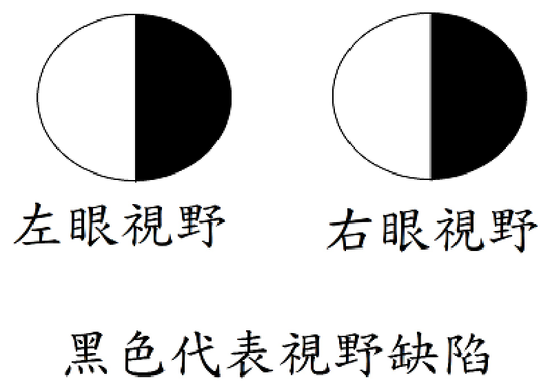

111 年第 2 次醫師醫學（一）（包括生物化學、解剖學、胚胎及發育生物學、組織學、生理學等科目知識及其臨床之應用）試題與答案
這一頁是民國 111 年第 2 次醫師醫學（一）（包括生物化學、解剖學、胚胎及發育生物學、組織學、生理學等科目知識及其臨床之應用）的整份歷屆試題，共 100 題，題目與標準答案出自考選部「國家考試試題及測驗式試題答案」開放資料，其中 100 題附有詳解。以下逐題列出題幹、選項與答案；要計時作答或記錄成績，請用線上練習。
考選部原始場次代碼：111100
線上作答這一科 →
全部 100 題
第 1 題
下列何者由腦幹內的內弓狀纖維（internal arcuate fibers）交叉到對側之後匯聚形成？
- （A）內側蹄系（medial lemniscus）
- （B）脊髓蹄系（spinal lemniscus）
- （C）外側蹄系（lateral lemniscus）
- （D）錐體交叉（pyramidal decussation）
答案：（A）
詳解與考點
正解：內弓狀纖維是薄束核與楔束核神經元的軸突，在延腦交叉至對側後匯聚為內側蹄系，傳遞精細觸覺、本體覺與震動覺，故選 A。
B：脊髓蹄系主要由脊髓丘腦徑等上行纖維構成，傳遞痛覺、溫覺與粗觸覺，不是內弓狀纖維交叉後的產物。
C：外側蹄系是聽覺路徑的上行纖維束，通往下丘，與後柱－內側蹄系統的交叉無關。
D：錐體交叉是皮質脊髓束在延腦尾端的交叉；它看似也發生於腦幹，但所交叉的是運動纖維而非內弓狀纖維。
本題考點：後柱－內側蹄系路徑（dorsal column-medial lemniscus pathway）中，薄束核與楔束核的軸突形成內弓狀纖維並交叉；交叉後上行為內側蹄系（medial lemniscus）。
第 2 題
連結大腦皮質的布羅卡氏區（Broca's area）與沃尼克氏區（Wernicke's area）間的主要神經纖維束稱為：
- （A）弓狀束（arcuate fasciculus）
- （B）內側縱束（medial longitudinal fasciculus）
- （C）背側縱束（dorsal longitudinal fasciculus）
- （D）內側前腦束（medial forebrain bundle）
答案：（A）
詳解與考點
正解：連結優勢半球 Broca's area 與 Wernicke's area 的主要白質纖維束是弓狀束（arcuate fasciculus），故選 A。它是語言理解區與語言表達區之間的重要連結。
B：內側縱束（medial longitudinal fasciculus）協調眼球運動相關腦神經核，並不連結兩個大腦皮質語言區。
C：背側縱束（dorsal longitudinal fasciculus）與下視丘、自主神經及腦幹的連結較相關，不是典型語言束。
D：內側前腦束（medial forebrain bundle）連結邊緣系統、下視丘與腦幹，被視為獎賞與情緒相關路徑，非 Broca's area 與 Wernicke's area 的直接主要通路。
本題考點：弓狀束（arcuate fasciculus）是語言網路的聯絡纖維，連結 Broca's area 與 Wernicke's area；其損傷可造成傳導性失語症（conduction aphasia）。
第 3 題
乳頭體（mamillary body）發出乳頭丘腦束（mamillo-thalamic fasciculus），主要進入丘腦（thalamus）的那一神經核？
- （A）腹前側核（ventral anterior nuclei）
- （B）前側核（anterior nuclei）
- （C）腹後外側核（ventral posterior lateral nuclei）
- （D）腹後內側核（ventral posterior medial nuclei）
答案：（B）
詳解與考點
正解：乳頭丘腦束是 Papez circuit 的一段，由乳頭體投射至丘腦前側核（anterior nuclei），故選 B。前側核再與扣帶迴等邊緣系統結構相連。
A：腹前側核主要接受基底核與小腦的輸入，參與運動調控，並非乳頭丘腦束的主要終點。
C：腹後外側核（VPL）是身體感覺的丘腦中繼核，接受內側蹄系與脊髓丘腦徑輸入，與乳頭體投射不同。
D：腹後內側核（VPM）主要中繼顏面感覺與味覺相關訊息，不是 Papez circuit 的乳頭丘腦束終站。
本題考點：Papez circuit 包含海馬、穹隆（fornix）、乳頭體、乳頭丘腦束（mamillothalamic fasciculus）、丘腦前側核與扣帶迴；丘腦前側核（anterior nuclei）與記憶及情緒功能相關。
第 4 題
下列何者不經過丘腦（thalamus），直接傳入邊緣系統（limbic system）？
- （A）嗅覺訊息（olfactory signal）
- （B）視覺訊息（visual signal）
- （C）聽覺訊息（auditory signal）
- （D）味覺訊息（gustatory signal）
答案：（A）
詳解與考點
正解：嗅覺路徑的初級傳入可由嗅球、嗅束直接到達初級嗅覺皮質及邊緣系統相關區域，不必先經丘腦中繼，故選 A。
B：視覺訊息由視網膜經外側膝狀體等丘腦結構中繼後傳至視覺皮質，並非直接繞過丘腦傳入邊緣系統。
C：聽覺訊息在上行路徑經內側膝狀體中繼至聽覺皮質，丘腦是其重要中繼站。
D：味覺訊息會經丘腦的腹後內側核相關區域投射至味覺皮質；它與嗅覺都能影響情緒與食慾，卻不具嗅覺的初級繞過丘腦特性。
本題考點：嗅覺路徑（olfactory pathway）是感覺系統中初級傳入不先經丘腦中繼的典型例外；嗅覺與邊緣系統（limbic system）的直接連結可解釋氣味與情緒、記憶的密切關係。
第 5 題
下列關於眼外肌中的下斜肌（inferior oblique）的描述，何者錯誤？
- （A）由動眼神經（oculomotor nerve）支配
- （B）可讓瞳孔朝下朝外側觀看
- （C）起點位於上頷骨
- （D）終點附著於眼球後半部
答案：（B）
詳解與考點
正解：本題問錯誤敘述；下斜肌的主要作用為上轉、外轉與外旋眼球，因此使瞳孔朝下朝外側是上斜肌的作用，不是下斜肌，故選 B。
A：下斜肌由動眼神經（CN III）支配，敘述正確，故非答案。
C：下斜肌起於眼眶前內側的上頷骨，與多數眼外肌起於共同腱環不同，敘述正確，故非答案。
D：下斜肌走向眼球外側並附著在眼球後半部，敘述正確，故非答案。
本題考點：下斜肌（inferior oblique）由動眼神經（oculomotor nerve, CN III）支配，作用為上轉、外轉、外旋；上斜肌（superior oblique）則使眼球下轉、外轉、內旋。
第 6 題
下列何者與內頸動脈（internal carotid artery）一起穿入海綿竇（cavernous sinus）內，而後自行進入眼眶？
- （A）視神經（optic nerve）
- （B）外旋神經（abducens nerve）
- （C）三叉神經（trigeminal nerve）
- （D）滑車神經（trochlear nerve）
答案：（B）
詳解與考點
正解：外旋神經（CN VI）與內頸動脈同在海綿竇腔內行走，之後經上眶裂進入眼眶支配外直肌，故選 B。
A：視神經經視神經管進入眼眶，不是在海綿竇內與內頸動脈同行。
C：三叉神經的眼神經與上頷神經分支走在海綿竇外側壁，並非位於竇腔內；三叉神經本幹也不會自行進入眼眶。
D：滑車神經走行於海綿竇外側壁，之後經上眶裂入眶；它看似也會進入眼眶，但與外旋神經所在的竇腔內位置不同。
本題考點：海綿竇（cavernous sinus）腔內有內頸動脈（internal carotid artery）與外旋神經（abducens nerve, CN VI）；CN III、CN IV、V1、V2 位於其外側壁。
第 7 題
下列關於眼瞼（eyelid）的描述，何者正確？
- （A）瞼板腺（tarsal gland）分泌水樣狀液體
- （B）收集眼淚的淚湖（lacrimal lake）位於眼眶外下部
- （C）提上眼瞼肌（levator palpebrae superioris）負責關閉眼瞼
- （D）淚腺（lacrimal gland）位於眼眶外上部
答案：（D）
詳解與考點
正解：淚腺位於眼眶外上部的淚腺窩，分泌淚液後流向眼球表面，故選 D。
A：瞼板腺（tarsal gland）分泌的是脂質性 meibum，可減少淚液蒸發，不是水樣狀液體。
B：淚湖（lacrimal lake）位於內眥附近，收集淚液後導向淚點，並非眼眶外下部。
C：提上眼瞼肌使上眼瞼上提、張開眼瞼；關閉眼瞼主要由眼輪匝肌（orbicularis oculi）負責。
本題考點：淚器（lacrimal apparatus）中，淚腺（lacrimal gland）位於眼眶外上部，淚液經眼表流向內眥的淚湖；瞼板腺（tarsal gland）分泌脂質以穩定淚膜。
第 8 題
下列何者不是頸神經叢（cervical plexus）的分支？
- （A）枕小神經（lesser occipital nerve）
- （B）耳大神經（great auricular nerve）
- （C）肩胛上神經（suprascapular nerve）
- （D）鎖骨上神經（supraclavicular nerve）
答案：（C）
詳解與考點
正解：肩胛上神經源自臂神經叢上幹，而非頸神經叢，故選 C。它主要支配 supraspinatus 與 infraspinatus。
A：枕小神經是頸神經叢的皮支，主要來自 C2，供應耳後與後外側頭皮感覺，故非答案。
B：耳大神經是頸神經叢皮支，主要來自 C2、C3，供應耳廓與腮腺區皮膚感覺，故非答案。
D：鎖骨上神經為頸神經叢皮支，主要來自 C3、C4，供應鎖骨及肩上區皮膚感覺，故非答案。
本題考點：頸神經叢（cervical plexus）由 C1–C4 前支構成，其皮支包括枕小神經、耳大神經與鎖骨上神經；肩胛上神經（suprascapular nerve）屬臂神經叢（brachial plexus）。
第 9 題
下列何者不是顏面神經在顳骨區域的分支？
- （A）岩大神經（greater petrosal nerve）
- （B）岩小神經（lesser petrosal nerve）
- （C）鼓索神經（chorda tympani nerve）
- （D）鐙骨肌神經（nerve to stapedius）
答案：（B）
詳解與考點
正解：本題問不屬於顏面神經在顳骨內的分支；岩小神經源自舌咽神經相關的鼓室神經叢，將副交感纖維帶往耳神經節，並非顏面神經分支，故選 B。
A：岩大神經是顏面神經在膝狀神經節附近發出的分支，攜帶副交感纖維至翼腭神經節，敘述正確，故非答案。
C：鼓索神經是顏面神經在顳骨內的分支，攜帶舌前 2/3 味覺與副交感纖維，敘述正確，故非答案。
D：鐙骨肌神經是顏面神經在顳骨內發出的運動分支，支配鐙骨肌，敘述正確，故非答案。
本題考點：顏面神經（facial nerve, CN VII）的顳骨內分支包括岩大神經（greater petrosal nerve）、鼓索神經（chorda tympani）與鐙骨肌神經；岩小神經（lesser petrosal nerve）與舌咽神經（CN IX）相關。
第 10 題
拔除臼齒（molar teeth）時，不慎折斷牙根，其碎片最可能進入下列何副鼻竇？
- （A）蝶竇（sphenoid sinus）
- （B）篩竇（ethmoid sinus）
- （C）額竇（frontal sinus）
- （D）上頷竇（maxillary sinus）
答案：（D）
詳解與考點
正解：上頷後牙，尤其臼齒的牙根與上頷竇底部解剖位置相近；拔牙時牙根碎片最可能進入上頷竇，故選 D。
A：蝶竇位於蝶骨體內、位置深且偏後上方，和臼齒牙根沒有直接鄰近關係。
B：篩竇位於鼻腔外側壁與眼眶內側壁間，較接近鼻根與眼眶，不是臼齒根部的鄰近竇腔。
C：額竇位於額骨內、眶上方，與上頷臼齒根部距離遠，故不可能是最常見受累的副鼻竇。
本題考點：上頷竇（maxillary sinus）與上頷後牙根部關係密切；牙科處置可造成口腔－上頷竇交通（oroantral communication）或牙根進入上頷竇。
第 11 題
下列有關嘴唇結構的敘述，何者錯誤？
- （A）嘴唇的核心肌肉為口輪匝肌（orbicularis oris）
- （B）嘴唇的淋巴只引流到頦下淋巴結（submental lymph nodes）
- （C）上下嘴唇內均具有唇繫帶（labial frenula）
- （D）嘴唇的血液供應來自上、下唇動脈（superior and inferior labial artery），它們是顏面動脈（facial artery）分支
答案：（B）
詳解與考點
正解：本題問錯誤敘述；嘴唇淋巴不會只引流至頦下淋巴結。下唇中央多引流至頦下淋巴結，但上唇及下唇外側常引流至頜下淋巴結，故 B 錯誤。
A：口輪匝肌構成嘴唇的主要肌肉核心，參與閉唇與噘嘴等動作，敘述正確，故非答案。
C：上、下嘴唇內側均可見唇繫帶，將嘴唇黏膜連至齒槽黏膜，敘述正確，故非答案。
D：上、下唇動脈是顏面動脈分支，供應嘴唇血液，敘述正確，故非答案。
本題考點：嘴唇（lips）的核心肌為口輪匝肌（orbicularis oris）；唇部淋巴引流（lymphatic drainage）依位置流向頦下或頜下淋巴結，不能一概視為只流向頦下淋巴結。
第 12 題
下列那一條神經負責中耳鼓室（tympanic cavity）內黏膜的一般感覺？
- （A）第五對腦神經（CN V）
- （B）第七對腦神經（CN VII）
- （C）第九對腦神經（CN IX）
- （D）第十對腦神經（CN X）
答案：（C）
詳解與考點
正解：中耳鼓室黏膜的一般感覺主要由舌咽神經（CN IX）的鼓室支及其形成的鼓室神經叢傳遞，故選 C。
A：三叉神經（CN V）負責廣泛的顏面一般感覺，但不是鼓室腔黏膜的一般感覺主要來源。
B：顏面神經（CN VII）的鼓索神經通過鼓室，但主要攜帶舌前 2/3 味覺與副交感纖維；它看似穿越中耳，卻不負責鼓室黏膜一般感覺。
D：迷走神經（CN X）支配範圍包含咽喉與部分外耳感覺等，不是中耳鼓室黏膜的一般感覺神經。
本題考點：舌咽神經（glossopharyngeal nerve, CN IX）的鼓室支（tympanic nerve）形成鼓室神經叢（tympanic plexus），提供中耳鼓室黏膜的一般感覺並參與岩小神經相關路徑。
第 13 題
下列那一部位損傷會出現如圖的視野缺損情形？

- （A）左視徑（left optic tract）
- （B）視交叉（optic chiasm）
- （C）右視神經（right optic nerve）
- （D）右外膝狀核（right lateral geniculate nucleus）
答案：（A）
詳解與考點
正解：圖中左、右眼視野的右半側皆呈黑色缺損，表示雙眼同側的右視野都消失，為右同向偏盲（right homonymous hemianopia）。視交叉後的左側視覺路徑承載雙眼右側視野的訊息；左視徑受損會切斷這些纖維，因此造成右同向偏盲，故選 A。
B：視交叉中央受損主要傷及兩眼鼻側視網膜交叉而來的纖維，鼻側視網膜接收顳側視野，故典型表現是雙顳側偏盲（bitemporal hemianopia），不是圖示的雙眼右側視野缺損。
C：右視神經位於視交叉之前，只傳遞右眼的全部視覺訊息；受損會造成右眼單眼失明，而非左、右眼都缺少右半側視野。
D：右外膝狀核位於視交叉後，承載雙眼左側視野的訊息；右側受損應造成左同向偏盲，與圖示右同向偏盲的方向相反。
本題考點：視覺路徑（visual pathway）——鼻側視網膜纖維在視交叉交叉、顳側纖維不交叉；同向偏盲（homonymous hemianopia）表示病灶位於視交叉後，缺損視野的對側視徑、外膝狀核、視放射或枕葉視覺皮質皆可能受損。
第 14 題
右後胸壁的血液主要回流至下列那一個靜脈？
- （A）內胸靜脈（internal thoracic vein）
- （B）半奇靜脈（hemiazygos vein）
- （C）副半奇靜脈（accessory hemiazygos vein）
- （D）奇靜脈（azygos vein）
答案：（D）
詳解與考點
正解：「右後胸壁」的靜脈回流。後肋間靜脈在右側主要匯入奇靜脈（azygos vein），再回流至上腔靜脈；因此右後胸壁的主要回流血管為（D）奇靜脈，故選 D。
A：內胸靜脈（internal thoracic vein）主要伴隨內胸動脈，收集前胸壁與上腹壁的血液，非右後胸壁的主要回流途徑。
B：半奇靜脈（hemiazygos vein）位於左側，下部左後肋間靜脈多匯入其中，之後跨越至右側注入奇靜脈；其左右位置與本題不符。
C：副半奇靜脈（accessory hemiazygos vein）主要收集上部左後肋間靜脈血液，亦非右後胸壁的主要回流。
本題考點：奇靜脈系統（azygos system）是胸壁靜脈與上、下腔靜脈間的重要側枝循環；右後肋間靜脈主要流入奇靜脈，左側則多經半奇與副半奇靜脈回流。
第 15 題
漿液性心包膜（serous pericardium）壁層（parietal layer）的痛覺由下列何者傳遞？
- （A）肋間神經（intercostal nerve）
- （B）迷走神經（vagus nerve）
- （C）交感神經幹（sympathetic trunk）
- （D）膈神經（phrenic nerve）
答案：（D）
詳解與考點
正解：關鍵在漿液性心包膜的「壁層」；它與纖維性心包膜相連，感覺神經支配來自膈神經（phrenic nerve）。因此心包膜的痛覺可轉移至同一脊髓節段的肩部，故選 D。
A：肋間神經（intercostal nerve）支配胸壁與肋間肌的感覺、運動，並非心包膜壁層痛覺的主要傳入神經。
B：迷走神經（vagus nerve）主要提供心臟與呼吸道的副交感神經支配；心包膜壁層的痛覺不經迷走神經傳遞。
C：交感神經幹（sympathetic trunk）參與胸腹腔臟器的交感神經路徑，但不負責此壁層心包膜的體性痛覺。
本題考點：心包膜神經支配（pericardial innervation）——纖維性心包膜與漿液性心包膜壁層由膈神經傳遞痛覺；漿液性心包膜臟層對疼痛較不敏感。
第 16 題
有關支氣管肺節段（bronchopulmonary segment），下列敘述何者最恰當？
- （A）每一個支氣管肺節段內的氣體，主要由一個細支氣管（bronchiole）來供應
- （B）左右肺各有十個支氣管肺節段，但部分支氣管肺節段在右肺常常會彼此合併
- （C）肺動脈常見於兩個支氣管肺節段之間
- （D）單一個支氣管肺節段可以被手術移除，而不影響鄰近區域支氣管肺節段的功能
答案：（D）
詳解與考點
正解：支氣管肺節段（bronchopulmonary segment）各有獨立的節段支氣管與肺動脈分支供應，節間的靜脈走行有助界定切除面。因此單一節段能在保留鄰近節段的前提下施行節段切除，故（D）最恰當。
A：一個肺節段主要由節段支氣管（segmental bronchus）供氣，而非細支氣管（bronchiole）；細支氣管是更遠端的分支，層級錯置。
B：左右肺的節段數可有變異，但常見合併較多是在左肺，不能以「右肺常常彼此合併」作為正確敘述。它看似抓到節段數變異，卻把常見側別說反。
C：肺動脈分支通常與節段支氣管在節段中央同行；位於相鄰節段之間、作為節間標誌的主要是肺靜脈，故錯。
本題考點：支氣管肺節段（bronchopulmonary segment）是肺葉內可手術切除的解剖單位；節段支氣管與肺動脈走行節內，肺靜脈多走行於節間。
第 17 題
有關胸骨角（sternal angle）之敘述，下列何者正確？
- （A）兩側連接第一肋骨
- （B）水平位置對應第四與第五胸椎間
- （C）為胸骨體與劍突交界
- （D）年輕時屬滑液關節（synovial joint），中老年時骨化
答案：（B）
詳解與考點
正解：胸骨角（sternal angle）是胸骨柄與胸骨體的交界，其平面約對應 T4-T5 椎間盤，也是第二肋軟骨的定位標誌，故（B）正確。
A：胸骨角兩側連接的是第二肋軟骨，不是第一肋骨；第一肋軟骨連接於胸骨柄。
C：胸骨體與劍突的交界是劍胸關節（xiphisternal joint），不是胸骨角。
D：胸骨角在年輕時是次級軟骨關節（secondary cartilaginous joint），而非滑液關節；可隨年齡骨化，但關節類型的敘述錯誤。
本題考點：胸骨角（sternal angle/Angle of Louis）對應 T4-T5 平面與第二肋軟骨；是肋骨計數及胸腔重要構造定位的表面解剖標誌。
第 18 題
下膈動脈（inferior phrenic artery）是下列何者的分支？
- （A）腹主動脈（abdominal aorta）
- （B）腎上腺動脈（suprarenal artery）
- （C）內胸動脈（internal thoracic artery）
- （D）胸主動脈（thoracic aorta）
答案：（A）
詳解與考點
正解：下膈動脈（inferior phrenic artery）是橫膈的主要動脈供應，通常自腹主動脈（abdominal aorta）起始，故選 A。
B：腎上腺動脈（suprarenal artery）是供應腎上腺的血管，並非下膈動脈的來源；相反地，下膈動脈可發出上腎上腺支。
C：內胸動脈（internal thoracic artery）發出心包膈動脈與肌膈動脈供應橫膈前部，易與下膈動脈混淆，但不是下膈動脈的母幹。
D：胸主動脈（thoracic aorta）位於橫膈上方，雖供應部分胸壁與縱膈構造，下膈動脈通常由橫膈下方的腹主動脈發出。
本題考點：橫膈血液供應（diaphragmatic blood supply）包括腹主動脈的下膈動脈，以及內胸動脈的心包膈與肌膈分支；下膈動脈也常供應腎上腺上極。
第 19 題
下列何者是腹膜後器官（retroperitoneal organ）？
- （A）肝臟（liver）
- （B）胃（stomach）
- （C）空腸（jejunum）
- （D）胰臟（pancreas）
答案：（D）
詳解與考點
正解：本題考腹膜位置。胰臟除尾部外大多在胚胎發育後固定於後腹壁，屬次發性腹膜後器官（secondarily retroperitoneal organ），故選 D。
A：肝臟幾乎完全被臟層腹膜覆蓋，僅裸區未被覆蓋，不能歸為腹膜後器官。
B：胃由腹膜包覆並以網膜連至鄰近構造，屬腹膜內器官（intraperitoneal organ）。
C：空腸有腸繫膜、活動度高，亦屬腹膜內器官。
本題考點：腹膜後器官（retroperitoneal organ）可分原發性與次發性；胰臟大部、十二指腸第 2 至第 4 段及升、降結腸為常見次發性腹膜後器官。
第 20 題
肝圓韌帶（round ligament of liver）是何種結構的遺跡？
- （A）靜脈導管（ductus venosus）
- （B）臍靜脈（umbilical vein）
- （C）臍動脈（umbilical artery）
- （D）臍尿管（urachus）
答案：（B）
詳解與考點
正解：肝圓韌帶（round ligament of liver）位於鐮狀韌帶的游離緣，是胎兒左臍靜脈（umbilical vein）出生後閉鎖形成的遺跡，故選 B。
A：靜脈導管（ductus venosus）出生後閉鎖形成的是靜脈韌帶（ligamentum venosum），位置在肝臟臟面，非肝圓韌帶。
C：臍動脈（umbilical artery）的遠端閉鎖後形成內側臍韌帶（medial umbilical ligament），不形成肝圓韌帶。
D：臍尿管（urachus）閉鎖後形成正中臍韌帶（median umbilical ligament），位於膀胱與臍之間。
本題考點：胎兒循環遺跡（fetal circulatory remnants）——臍靜脈形成肝圓韌帶，靜脈導管形成靜脈韌帶；兩者位置相近，是常見配對誘答。
第 21 題
下列結構及其神經支配之配對，何者錯誤？
- （A）橫膈（diaphragm）：膈神經（phrenic nerve）
- （B）腰大肌（psoas major muscle）：股神經（femoral nerve）
- （C）腹外斜肌（external oblique muscle）：T7-T11胸段脊神經（T7-T11 thoracic spinal nerves）
- （D）髂肌（iliacus）：股神經（femoral nerve）
答案：（B）
詳解與考點
正解：本題問錯誤配對。腰大肌（psoas major muscle）由腰神經前支直接支配，不是由股神經支配；（B）的神經支配錯誤，故選 B。
A：橫膈（diaphragm）的主要運動神經是膈神經（phrenic nerve），此配對正確。
C：腹外斜肌（external oblique muscle）由下位肋間神經支配，T7-T11 的胸段脊神經確為其主要支配來源，故非答案。
D：髂肌（iliacus）主要由股神經（femoral nerve）支配，與（B）同屬髂腰肌群，卻因各自神經來源不同而容易混淆；此配對正確。
本題考點：髂腰肌群神經支配（innervation of iliopsoas）——腰大肌受腰神經前支支配，髂肌受股神經支配；兩者共同屈髖但神經來源不同。
第 22 題
關於女性外陰（vulva），下列敘述何者正確？
- （A）尿道旁腺（paraurethral glands）又稱為巴多林氏腺（Bartholin's glands），其導管（ducts）開口於尿道口附近
- （B）大前庭腺（greater vestibular gland）位於前庭球（bulb of vestibule）的前方
- （C）男性陰莖（penis）有懸韌帶（suspensory ligament），但女性陰蒂（clitoris）沒有
- （D）前庭球（bulb of vestibule）是由勃起組織（erectile tissue）構成
答案：（D）
詳解與考點
正解：前庭球（bulb of vestibule）是位於陰道口兩側的成對勃起組織（erectile tissue），與陰蒂同源的勃起組織系統有關，故（D）正確。
A：尿道旁腺（paraurethral glands）是 Skene 腺，並非大前庭腺或巴多林氏腺（Bartholin's glands）；兩者名稱與開口位置不同。
B：大前庭腺位於前庭球的後方，非前方；其導管開口於陰道口後外側的前庭。
C：陰蒂（clitoris）同樣有懸韌帶（suspensory ligament），並非只有陰莖具有。
本題考點：女性外陰（vulva）——前庭球由勃起組織構成；大前庭腺位於前庭球後方；尿道旁腺與大前庭腺是不同構造。
第 23 題
下列何者不進入骨盆腔？
- （A）輸尿管（ureter）
- （B）薦正中動脈（median sacral artery）
- （C）下直腸動脈（inferior rectal artery）
- （D）卵巢動脈（ovarian artery）
答案：（C）
詳解與考點
正解：本題要區分「進入骨盆腔」與在骨盆外的會陰部走行。下直腸動脈（inferior rectal artery）通常由陰部內動脈在坐骨肛門窩附近發出，供應肛管下部與會陰，並不進入骨盆腔，故選 C。
A：輸尿管（ureter）跨過骨盆緣後進入骨盆腔，再通向膀胱，故不符題意。
B：薦正中動脈（median sacral artery）沿薦骨前面向下走行，進入骨盆腔，故非答案。
D：卵巢動脈（ovarian artery）跨過骨盆緣後沿懸韌帶進入骨盆腔以供應卵巢；它看似源自腹主動脈而易被誤選，但其末端確會進入骨盆。
本題考點：骨盆血管走行（pelvic vascular anatomy）——陰部內動脈離開骨盆後在會陰分支；下直腸動脈供應肛管下部與坐骨肛門窩。
第 24 題
下列何者不是髂內動脈（internal iliac artery）的分支？
- （A）深髂迴旋動脈（deep circumflex iliac artery）
- （B）髂腰動脈（iliolumbar artery）
- （C）臀上動脈（superior gluteal artery）
- （D）臀下動脈（inferior gluteal artery）
答案：（A）
詳解與考點
正解：深髂迴旋動脈（deep circumflex iliac artery）是髂外動脈（external iliac artery）的分支，不是髂內動脈分支，故選 A。
B：髂腰動脈（iliolumbar artery）是髂內動脈後幹分支，向上供應髂肌與腰部構造。
C：臀上動脈（superior gluteal artery）由髂內動脈後幹發出，經梨狀肌上方離開骨盆。
D：臀下動脈（inferior gluteal artery）由髂內動脈前幹發出，經梨狀肌下方離開骨盆。
本題考點：髂內動脈分支（branches of internal iliac artery）分為前、後幹；深髂迴旋動脈雖名稱帶有「髂」，實際源自髂外動脈，是常見命名誘答。
第 25 題
下列何者受損對肛管（anal canal）管壁肌肉的收縮影響最大？
- （A）腰內臟神經（lumbar splanchnic nerve）
- （B）骨盆內臟神經（pelvic splanchnic nerve）
- （C）薦交感神經幹（sacral sympathetic trunk）
- （D）會陰神經（perineal nerve）
答案：（B）
詳解與考點
正解：肛管壁的平滑肌與直腸蠕動受骨盆內臟神經（pelvic splanchnic nerve）的副交感神經支配；受損會明顯影響直腸與肛管壁肌肉的活動，故選 B。
A：腰內臟神經（lumbar splanchnic nerve）主要攜帶交感神經纖維至下腹神經叢，並非肛管壁平滑肌收縮的主要神經來源。
C：薦交感神經幹（sacral sympathetic trunk）參與交感神經路徑，但對腸壁蠕動的促進作用不如骨盆內臟神經直接。
D：會陰神經（perineal nerve）支配外肛門括約肌等橫紋肌，影響隨意收縮；題目問的是肛管管壁肌肉活動，重點在自主神經支配的平滑肌。
本題考點：骨盆內臟神經（pelvic splanchnic nerves）提供 S2-S4 副交感神經至後腸與骨盆臟器，促進直腸蠕動並參與排便反射；陰部神經系統則支配外肛門括約肌。
第 26 題
下列有關大隱靜脈（great saphenous vein）的敘述，何者錯誤？
- （A）一般起源於足背靜脈弓（dorsal venous arch）
- （B）於內踝（medial malleolus）的後側向上延伸
- （C）會與小隱靜脈（small saphenous vein）形成吻合（anastomosis）
- （D）最終匯入股靜脈（femoral vein）
答案：（B）
詳解與考點
正解：大隱靜脈（great saphenous vein）在足部內側起始後，應從內踝（medial malleolus）前方上行，而不是後側；（B）錯誤，故選 B。
A：大隱靜脈一般起自足背靜脈弓（dorsal venous arch）的內側端，此敘述正確。
C：大隱靜脈與小隱靜脈（small saphenous vein）可藉表淺靜脈網形成交通或吻合，敘述正確。
D：大隱靜脈穿過隱靜脈裂孔後匯入股靜脈（femoral vein），為其終末回流處。
本題考點：大隱靜脈（great saphenous vein）走行——經內踝前方、沿下肢內側上行，最後注入股靜脈；相對地，小隱靜脈走經外踝後方。
第 27 題
下列那一條神經所支配的肌肉群同時具有屈曲上臂與前臂作用（flex arm and forearm）﹖
- （A）腋神經（axillary nerve）
- （B）胸背神經（thoracodorsal nerve）
- （C）肌皮神經（musculocutaneous nerve）
- （D）上肩胛下神經（upper subscapular nerve）
答案：（C）
詳解與考點
正解：肌皮神經（musculocutaneous nerve）支配肱二頭肌、肱肌與喙肱肌；其中肱二頭肌可屈肘，喙肱肌與肱二頭肌長頭可協助屈肩，因此其支配肌群兼有屈上臂與屈前臂作用，故選 C。
A：腋神經（axillary nerve）支配三角肌與小圓肌，主要作用為肩外展與外旋，沒有屈前臂的主要功能。
B：胸背神經（thoracodorsal nerve）支配背闊肌，主要使上臂伸展、內收與內旋，作用方向與屈上臂不符。
D：上肩胛下神經（upper subscapular nerve）支配肩胛下肌，主要使上臂內旋，並不支配屈肘肌群。
本題考點：肌皮神經（musculocutaneous nerve）支配上臂前室；肱二頭肌屈肘並可協助屈肩，故能同時連結肩、肘兩關節的屈曲功能。
第 28 題
下列何者的肌腱繞過載距突（sustentaculum tali）下方的溝槽進入足底？
- （A）屈 長肌（flexor hallucis longus）
- （B）屈趾長肌（flexor digitorum longus）
- （C）屈 短肌（flexor hallucis brevis）
- （D）屈趾短肌（flexor digitorum brevis）
答案：（A）
詳解與考點
正解：載距突（sustentaculum tali）下方有供屈長肌腱通過的溝槽；屈長肌（flexor hallucis longus）肌腱由此繞行後進入足底，再走向拇趾，故選 A。
B：屈趾長肌（flexor digitorum longus）肌腱通過內踝後方並進入足底，但不走於載距突下方的溝槽。它同為深層屈肌腱而看似合理，關鍵差異在其通過的骨性溝槽不同。
C：屈短肌（flexor hallucis brevis）位於足底，本身不由小腿後側繞過載距突進入足底。
D：屈趾短肌（flexor digitorum brevis）亦是足底固有肌，並非跨踝進入足底的長肌腱。
本題考點：踝隧道與足底肌腱（tarsal tunnel and plantar tendons）——屈長肌腱走過載距突下方；屈趾長肌與脛後肌腱則有不同的內踝後方走行。
第 29 題
下列甲、乙、丙三個椎骨，在脊柱由頭端往尾端的排列順序為何？
- （A）甲→乙→丙
- （B）丙→乙→甲
- （C）乙→甲→丙
- （D）丙→甲→乙
答案：（D）
詳解與考點
正解：椎骨由頭端至尾端的正確排序為丙→甲→乙，故選 D。應以各椎骨的區域性形態判定其所屬位置，再依頸椎、胸椎、腰椎、薦椎、尾椎的頭尾序列排列。
A：甲→乙→丙把丙誤置於最尾端，與正確排序不符。
B：丙→乙→甲將甲與乙的相對頭尾位置顛倒，故錯。
C：乙→甲→丙將整體頭尾順序倒置，故錯。
本題考點：脊柱區域排序（vertebral column regional order）——由頭端至尾端依序為頸椎、胸椎、腰椎、薦椎、尾椎；應以椎體、椎孔與突起形態辨識其所屬區域。
第 30 題
股骨大轉子（greater trochanter）碎裂時，對下列何者的功能影響最小？
- （A）臀大肌（gluteus maximus）
- （B）臀小肌（gluteus minimus）
- （C）梨狀肌（piriformis）
- （D）閉孔內肌（obturator internus）
答案：（A）
詳解與考點
正解：大轉子（greater trochanter）是多條臀部深層肌與臀中、小肌的附著點，但臀大肌（gluteus maximus）主要止於臀肌粗隆與髂脛束，不以大轉子為主要止點；大轉子碎裂對（A）功能影響最小，故選 A。
B：臀小肌（gluteus minimus）止於大轉子前面，碎裂會直接影響其髖外展與內旋功能。
C：梨狀肌（piriformis）止於大轉子上緣，故大轉子受損會影響其外旋功能。
D：閉孔內肌（obturator internus）經小坐骨孔後止於大轉子內側面，亦會受大轉子碎裂影響。
本題考點：大轉子肌肉附著（greater trochanter attachments）——臀中肌、臀小肌與多條髖外旋肌附著於大轉子；臀大肌主要止於髂脛束及臀肌粗隆。
第 31 題
下列何者起自屈指深肌（flexor digitorum profundus）的肌腱？
- （A）掌短肌（palmaris brevis）
- （B）骨間背側肌（dorsal interosseous muscle）
- （C）骨間掌側肌（palmar interosseous muscle）
- （D）蚓狀肌（lumbrical muscle）
答案：（D）
詳解與考點
正解：蚓狀肌（lumbrical muscle）起自屈指深肌（flexor digitorum profundus）的肌腱，之後連至伸指肌腱膜，能使掌指關節屈曲並使指間關節伸展，故選 D。
A：掌短肌（palmaris brevis）位於小指側掌面，起自掌腱膜與屈肌支持帶，不起自屈指深肌肌腱。
B：骨間背側肌（dorsal interosseous muscle）起自相鄰掌骨的側面，並非屈指深肌肌腱。
C：骨間掌側肌（palmar interosseous muscle）起自掌骨掌面，主要負責手指內收，同樣不以屈指深肌肌腱為起點。
本題考點：蚓狀肌（lumbricals）起自屈指深肌腱、止於伸指肌腱膜；其特殊的跨關節走行使其可屈掌指關節並伸指間關節。
第 32 題
下列關於胚胎之胸心包膜（pleuropericardial membrane）的敘述，何項錯誤？
- （A）形成漿液心包膜的臟層（visceral layer of serous pericardium）
- （B）此膜內包含有總主靜脈（common cardinal vein）
- （C）此膜內包含有膈神經（phrenic nerve）
- （D）此膜所形成之構造分隔胸膜腔與心包腔
答案：（A）
詳解與考點
正解：本題問錯誤敘述。胸心包膜（pleuropericardial membrane）形成纖維性心包膜與漿液性心包膜的壁層，不形成漿液性心包膜臟層；臟層源自心外膜，故（A）錯誤。
B：總主靜脈（common cardinal vein）在胚胎期位於胸心包膜內，後續與上腔靜脈發育相關，敘述正確。
C：膈神經（phrenic nerve）隨胸心包膜生長而嵌入其中，故成年時走行於纖維性心包膜外側，敘述正確。
D：胸心包膜融合後將胸膜腔與心包腔分隔，正是其在體腔分隔發育中的主要功能。
本題考點：胸心包膜（pleuropericardial membrane）形成纖維性心包膜與漿液性心包膜壁層；其內含膈神經與總主靜脈，並負責分隔心包腔與胸膜腔。
第 33 題
下列那一項構造衍生自第三咽弓（pharyngeal arch）？
- （A）莖突舌骨韌帶（stylohyoid ligament）
- （B）舌骨之小角（lesser cornu of hyoid bone）
- （C）舌骨之大角（greater cornu of hyoid bone）
- （D）甲狀軟骨（thyroid cartilage）
答案：（C）
詳解與考點
正解：第三咽弓（pharyngeal arch）的骨骼衍生物為舌骨大角與舌骨體下部，因此（C）舌骨之大角（greater cornu of hyoid bone）衍生自第三咽弓，故選 C。
A：莖突舌骨韌帶（stylohyoid ligament）為第二咽弓的 Reichert 軟骨衍生物，非第三咽弓。
B：舌骨小角（lesser cornu of hyoid bone）亦衍生自第二咽弓，與大角容易成對混淆。
D：甲狀軟骨（thyroid cartilage）主要衍生自第四與第六咽弓，不是第三咽弓。
本題考點：咽弓衍生物（pharyngeal arch derivatives）——第二咽弓形成莖突、莖突舌骨韌帶與舌骨小角；第三咽弓形成舌骨大角與舌骨體下部。
第 34 題
在胚胎發育至第幾週時，小腸會由體外返回腹腔內？
- （A）第四週
- （B）第七週
- （C）第十週
- （D）第十二週
答案：（C）
詳解與考點
正解：胚胎中期生理性臍疝後，小腸何時由臍帶回到腹腔。中腸因快速伸長而暫時進入臍帶，約在第10週腹腔容積增大後回納；因此小腸返回腹腔的時點為第十週，故選 C。
A：第4週主要是原始腸管形成及中腸袢開始發育的時期，尚未發生生理性臍疝後的腸管回納，故不對。
B：第7週接近中腸袢持續伸長及在臍帶內旋轉的階段；腸管尚未回到腹腔，故不對。
D：第12週時小腸通常早已完成回納。此選項看似接近胚胎中期，但把回納的典型時點延後了，故不對。
本題考點：生理性臍疝（physiological umbilical herniation）——中腸暫時進入臍帶，約第10週回納腹腔；中腸發育（midgut development）——腸管快速伸長、旋轉與回納的時序。
第 35 題
在胚胎時期心房間隔（interatrial septum）的發育，其第一孔（foramen primum）之封閉是由於：
- （A）第一中隔（septum primum）與心內膜墊（endocardial cushion）之融合
- （B）第二中隔（septum secundum）與心內膜墊（endocardial cushion）之融合
- （C）第一中隔（septum primum）之新細胞增生
- （D）第一中隔（septum primum）與第二中隔（septum secundum）之融合
答案：（A）
詳解與考點
正解：第一孔（foramen primum）如何關閉。第一中隔（septum primum）向下生長，當其游離緣與心內膜墊（endocardial cushion）融合時，兩者之間的第一孔即被封閉，故選 A；其後第一中隔上部形成的穿孔才形成第二孔。
B：第二中隔（septum secundum）位於第一中隔右側，主要形成卵圓孔（foramen ovale）的邊緣，並不與心內膜墊融合來封閉第一孔，故不對。
C：第一中隔內的細胞凋亡與再穿孔形成的是第二孔（foramen secundum），不是第一孔的封閉機轉，故不對。
D：第一中隔與第二中隔在出生後受左心房壓力作用而貼合，有助卵圓孔功能性關閉；這看似也是「中隔融合」，但不是胚胎期第一孔的關閉原因，故不對。
本題考點：心房中隔形成（atrial septation）——第一中隔與心內膜墊融合封閉第一孔；卵圓孔（foramen ovale）——由第二中隔形成其邊緣，出生後可功能性閉合。
第 36 題
下列那一項構造，不包含於鼓膜（tympanic membrane）的發育？
- （A）第一咽溝（pharyngeal groove）的外胚層（ectoderm）
- （B）第二咽溝（pharyngeal groove）的外胚層（ectoderm）
- （C）第一咽囊（pharyngeal pouch）的內胚層（endoderm）
- （D）第一和第二咽弓（pharyngeal arch）的間葉組織（mesenchyme）
答案：（B）
詳解與考點
正解：鼓膜的三層來源。鼓膜外層來自第一咽溝的外胚層，內層來自第一咽囊的內胚層，中間纖維層來自第一、二咽弓間的間葉；第二咽溝不參與其形成，故選 B。
A：第一咽溝的外胚層形成鼓膜的外側上皮層，屬鼓膜發育來源，故不是答案。
C：第一咽囊的內胚層形成鼓膜的內側上皮層，屬鼓膜發育來源，故不是答案。
D：第一與第二咽弓之間的間葉形成鼓膜中間的纖維層，亦是其組成來源，故不是答案。
本題考點：鼓膜發育（tympanic membrane development）——外胚層、間葉與內胚層共同構成三層；咽器官（pharyngeal apparatus）——第一咽溝與第一咽囊分別衍生外耳道側與中耳腔側構造。
第 37 題
骨骼肌肌梭（muscle spindle）之內鞘（internal capsule）所包覆的構造，不包含：
- （A）運動終板（motor end plate）
- （B）環螺旋末梢（annulospiral ending）
- （C）核鏈纖維（nuclear chain fiber）
- （D）核袋纖維（nuclear bag fiber）
答案：（A）
詳解與考點
正解：肌梭內鞘所包覆的是梭內肌纖維及其感覺末梢，而非一般骨骼肌神經肌肉接頭。內鞘內可見核袋纖維、核鏈纖維及環螺旋感覺末梢；運動終板是支配梭外肌纖維的典型神經肌肉接頭，並非內鞘所包覆的構造，故選 A。
B：環螺旋末梢（annulospiral ending）是初級感覺傳入末梢，纏繞梭內肌纖維中央區，位於肌梭內鞘內，故不是答案。
C：核鏈纖維（nuclear chain fiber）是梭內肌纖維的一型，位於肌梭內鞘內，故不是答案。
D：核袋纖維（nuclear bag fiber）同樣是梭內肌纖維，位於肌梭內鞘內，故不是答案。
本題考點：肌梭（muscle spindle）——由內鞘包覆梭內肌纖維與感覺末梢，偵測肌長與伸展；神經肌肉接頭（neuromuscular junction）——運動終板主要支配梭外骨骼肌纖維。
第 38 題
將分泌物質與細胞一併釋放至腺體管腔（lumen）的分泌方式是：
- （A）局部分泌（merocrine secretion）
- （B）頂部分泌（apocrine secretion）
- （C）全分泌（holocrine secretion）
- （D）內分泌（endocrine secretion）
答案：（C）
詳解與考點
正解：分泌時「細胞一併釋放」至腺體管腔。全分泌（holocrine secretion）會使整個分泌細胞崩解，細胞內容物與細胞殘骸共同成為分泌物，例如皮脂腺，故選 C。
A：局部分泌（merocrine secretion）以胞吐作用釋出分泌物，細胞本身保持完整，故不符合。
B：頂部分泌（apocrine secretion）是細胞頂端部分連同分泌物脫落，不是整個細胞一併釋放，故不符合。這是最易混淆的選項，因兩者都會帶走細胞成分，但範圍不同。
D：內分泌（endocrine secretion）是分泌物進入組織液與血液而非排入腺體管腔，故不符合。
本題考點：外分泌腺分泌模式（exocrine secretion）——merocrine 為胞吐、apocrine 為頂端胞質脫落、holocrine 為整個細胞崩解；皮脂腺（sebaceous gland）是 holocrine 的代表。
第 39 題
長骨骨幹（diaphysis of long bone）的直徑加粗（increase in diameter），最主要是下列何者的增生與分化所促成？
- （A）骨外膜（periosteum）
- （B）骨內膜（endosteum）
- （C）骨幹骺端（metaphysis）
- （D）骨骺板（epiphyseal plate）
答案：（A）
詳解與考點
正解：長骨骨幹「直徑」加粗，而非長度增加。骨外膜（periosteum）內層的成骨祖細胞分化為成骨細胞，在骨外表面進行附加性生長（appositional growth），使骨幹直徑增加，故選 A。
B：骨內膜（endosteum）參與骨內表面的骨重塑與吸收，有助擴大髓腔，但不是骨幹外徑加粗的主要來源，故不對。
C：骨幹骺端（metaphysis）是骨幹與骨骺間的區域，與生長板附近的骨改建相關，不能作為骨幹直徑加粗的主要細胞來源，故不對。
D：骨骺板（epiphyseal plate）透過軟骨內骨化使長骨長度增加。它看似與「生長」直接相關，但其主導的是縱向生長，不是直徑加粗，故不對。
本題考點：附加性生長（appositional growth）——骨外膜成骨細胞在骨表面沉積骨質，使長骨加粗；骨骺板（epiphyseal plate）——經軟骨內骨化促進長骨延長。
第 40 題
下列有關膜性迷路（membranous labyrinth）的敘述，何者錯誤？
- （A）壺腹嵴（crista ampullaris）是頭部角加速運動（angular acceleration）的感覺受器
- （B）頂帽（cupula）的耳石（otolith）是頭部直線加速運動（linear acceleration）的感覺受器
- （C）前庭階（scala vestibule）與鼓室階（scala tympani）於蝸孔（helicotrema）彼此相通
- （D）耳蝸導管（cochlear duct）內，流動的液體為內淋巴液（endolymph）
本題送分，無標準答案
詳解與考點
本題官方公告送分。
第 41 題
下列有關小動脈（arteriole）和小靜脈（venule）之敘述，何者正確？
- （A）兩者的血管內膜（tunica intima）均有單層的內皮細胞（endothelial cells）
- （B）兩者均有數層的骨骼肌細胞（skeletal muscle cells）和彈性板（elastic lamellae）組成
- （C）兩者在血管壁上有顯著波浪狀的彈性內膜（internal elastic membrane）
- （D）兩者均有平滑肌細胞（smooth muscle cells）所形成的微血管前括約肌（precapillary sphincter），控制血液進入微血管
答案：（A）
詳解與考點
正解：小動脈與小靜脈共同具有的血管壁構造。兩者的血管內膜（tunica intima）皆由面向管腔的單層內皮細胞（endothelial cells）構成，故選 A。
B：血管壁的肌細胞是平滑肌而非骨骼肌；小靜脈的肌層亦不如小動脈發達，不能說兩者均有數層骨骼肌與彈性板，故不對。
C：明顯波浪狀的彈性內膜是較大的肌性動脈特徵，小靜脈通常沒有顯著內彈性膜，故不對。
D：微血管前括約肌由小動脈末端或微動脈的平滑肌調節血流；小靜脈不具此共同構造，故不對。
本題考點：血管壁（vascular wall）——各型血管皆以單層內皮構成內膜；微血管前括約肌（precapillary sphincter）——主要位於小動脈端，調節進入毛細血管床的血流。
第 42 題
下列有關舌輪廓乳突（circumvallate papillae）的敘述，何者正確？
- （A）分布在舌外側且與舌長軸平行
- （B）含有許多味蕾（taste bud）
- （C）是舌乳突（papilla）中最小且數量最多
- （D）表面覆有單層扁平上皮（simple squamous epithelium）
答案：（B）
詳解與考點
正解：輪廓乳突的功能性組織特徵。舌輪廓乳突（circumvallate papillae）排列成舌後部的V字形，乳突側壁的上皮內含有許多味蕾（taste buds），故選 B。
A：分布在舌外側且與舌長軸平行的是葉狀乳突（foliate papillae）的典型位置與方向，非輪廓乳突，故不對。
C：最小且數量最多的是絲狀乳突（filiform papillae）；輪廓乳突數量少但體積大，故不對。
D：輪廓乳突表面為複層鱗狀上皮（stratified squamous epithelium），不是單層扁平上皮，故不對。
本題考點：輪廓乳突（circumvallate papillae）——位於舌後部V字形排列，側壁富含味蕾；舌乳突（lingual papillae）——絲狀、茸狀、葉狀與輪廓乳突的形態與分布鑑別。
第 43 題
下列有關十二指腸（duodenum）、空腸（jejunum）、迴腸（ileum）三者的結構比較，何項正確？
- （A）空腸（jejunum）有最多的杯狀細胞（goblet cells）
- （B）迴腸（ileum）有最多的絨毛（villi）
- （C）十二指腸（duodenum）有Brunner's gland
- （D）十二指腸（duodenum）有最多且明顯的Peyer's patch
答案：（C）
詳解與考點
正解：小腸三段最具鑑別力的組織構造。十二指腸（duodenum）的黏膜下層具有分泌鹼性黏液的 Brunner's gland，為其特徵，故選 C。
A：杯狀細胞沿小腸遠端逐漸增加，迴腸較空腸多，故空腸不是最多，故不對。
B：絨毛在近端十二指腸與空腸較發達，向迴腸方向逐漸變短、變少；迴腸不是最多，故不對。
D：Peyer's patch 是迴腸最明顯的集合淋巴小結，而非十二指腸。此選項看似把免疫組織和小腸混為一談，但部位配對錯誤，故不對。
本題考點：小腸組織學（small intestine histology）——十二指腸有 Brunner's gland，迴腸有集合淋巴小結；Peyer's patch——迴腸的主要黏膜相關淋巴組織。
第 44 題
下列有關腎臟的遠曲小管（distal convoluted tubule）和近曲小管（proximal convoluted tubule）的上皮比較，何項正確？
- （A）遠曲小管的上皮細胞內有許多的溶酶體（lysosomes），細胞質較濃染
- （B）遠曲小管上皮細胞的細胞核（nucleus）較靠近管腔（lumen）表面
- （C）兩者上皮細胞之間的界線均很明顯
- （D）兩者上皮細胞表面均有很多纖毛（cilia）
答案：（B）
詳解與考點
正解：遠曲小管與近曲小管的顯微形態差異。遠曲小管（distal convoluted tubule）細胞較矮、管腔較清楚，細胞核相對較靠近管腔表面；近曲小管細胞較高且有明顯刷狀緣，故選 B。
A：近曲小管承擔大量重吸收，細胞質較嗜酸性並含較多溶酶體；此敘述把近曲小管特徵套到遠曲小管，故不對。
C：近曲小管因細胞側邊界不清而呈現較模糊的管壁外觀，不能說兩者細胞界線均很明顯，故不對。
D：近曲小管的腔面有微絨毛形成刷狀緣，並非纖毛；兩者皆有許多纖毛的敘述不對。
本題考點：腎小管組織學（renal tubule histology）——近曲小管有刷狀緣、細胞質較嗜酸；遠曲小管管腔較清楚、細胞較矮且核較靠腔面。
第 45 題
下列有關黃體（corpus luteum）的敘述，何者錯誤？
- （A）顆粒層黃體細胞（granulosa lutein cells）的直徑，比卵泡鞘黃體細胞（theca lutein cells）為長
- （B）若無受精發生，則黃體逐漸退化而成白體（corpus albicans）
- （C）若有受精及著床發生，黃體在懷孕初期時會持續生長且變大
- （D）次級卵泡（secondary follicle）之顆粒層細胞（granulosa cells）及內鞘層（theca interna）細胞在排卵前已完全分化為黃體細胞（luteal cells）
答案：（D）
詳解與考點
正解：「何者錯誤」以及黃體細胞何時完成分化。顆粒層細胞與內鞘層細胞在排卵前尚未完全分化為黃體細胞；排卵後在黃體生成（luteinization）過程中才轉化為顆粒層黃體細胞與卵泡鞘黃體細胞，因此 D 錯誤，故選 D。
A：顆粒層黃體細胞（granulosa lutein cells）通常較卵泡鞘黃體細胞大，敘述正確，故不是答案。
B：未受精時黃體會退化，最終形成白體（corpus albicans），敘述正確，故不是答案。
C：受精與著床後，早期妊娠的黃體在滋養層訊號支持下持續生長與分泌，敘述正確，故不是答案。
本題考點：黃體生成（luteinization）——排卵後顆粒層與內鞘層細胞轉化為黃體細胞；黃體（corpus luteum）——未受精時退化為白體，早期妊娠則持續存在。
第 46 題
下列何者會與細精管的基底板（basal lamina of seminiferous tubule）相接觸？
- （A）精母細胞（spermatocyte）
- （B）精原細胞（spermatogonium）
- （C）精細胞（spermatid）
- （D）精子（spermatozoa）
答案：（B）
詳解與考點
正解：細精管上皮中最基底側的生殖細胞。精原細胞（spermatogonium）位於支持細胞間、緊貼細精管的基底板（basal lamina），是精子生成的最早期細胞，故選 B。
A：精母細胞（spermatocyte）由精原細胞分化後向管腔側移動，不直接與基底板相接觸，故不對。
C：精細胞（spermatid）位於更靠近管腔的位置，接受支持細胞支持，並不接觸基底板，故不對。
D：精子（spermatozoa）完成成熟後釋放至細精管管腔，距離基底板最遠，故不對。
本題考點：精子生成（spermatogenesis）——生殖細胞由基底側的精原細胞逐步向管腔側成熟；血睪丸障壁（blood-testis barrier）——由支持細胞間緊密連結區隔基底室與腔室。
第 47 題
就低溫下幫助維持細胞膜的流動性（membrane fluidity）而言，下列何種化學物質最為重要？
- （A）飽和脂肪酸
- （B）膽固醇
- （C）穿膜蛋白
- （D）周圍膜蛋白
答案：（B）
詳解與考點
正解：低溫時防止磷脂雙層過度凝固、維持膜流動性的成分。膽固醇（cholesterol）嵌在磷脂脂肪酸鏈之間，低溫時干擾脂肪酸鏈緊密排列，因此能避免細胞膜過度僵硬，故選 B。
A：飽和脂肪酸鏈較直，容易緊密堆疊，低溫時反而降低膜流動性，故不對。
C：穿膜蛋白主要負責運輸、受體或酵素等功能，並非低溫下調節脂雙層流動性的主要成分，故不對。
D：周圍膜蛋白附著在膜表面，主要參與訊號傳遞或結構支撐，不能取代膽固醇對脂質排列的調節，故不對。
本題考點：膜流動性（membrane fluidity）——受溫度、脂肪酸飽和度與膽固醇影響；膽固醇（cholesterol）——低溫時防止脂肪酸鏈過度緊密排列，高溫時亦限制過度流動。
第 48 題
下列何者最不可能造成視野缺失（scotoma）？
- （A）散光（astigmatism）
- （B）斜視（strabismus）
- （C）黃斑部退化（macular degeneration）
- （D）左側側膝核附近發生缺血缺氧中風（ischemic, hypoxic stroke around left lateral geniculate nucleus, LGN）
答案：（A）
詳解與考點
正解：「最不可能」造成真正的局部視野缺失（scotoma）。散光（astigmatism）是角膜或水晶體曲率不均造成的屈光不正，主要使影像模糊或變形，而非造成視野中固定的局部缺損，故選 A。
B：斜視（strabismus）可因雙眼視網膜對應異常引起複視或抑制；抑制可造成抑制性暗點，因此仍可能與 scotoma 有關，故不是最不可能。
C：黃斑部退化（macular degeneration）損害中央視網膜，典型會形成中央暗點，故不是答案。
D：左側側膝核（lateral geniculate nucleus, LGN）附近的缺血缺氧性中風可損害視覺傳導路，造成對側視野缺損，因此可能造成 scotoma，故不是答案。
本題考點：視野缺失（visual field defect）——視網膜黃斑病灶與視覺傳導路病灶可造成暗點或半側視野缺損；屈光不正（refractive error）——主要造成成像模糊，通常不造成固定的視野暗點。
第 49 題
下列有關耳蝸構造及功能的描述，何者最不適當？
- （A）內毛細胞數量通常較外毛細胞少，卻主要負責聽覺刺激的分析，外毛細胞則和在背景噪音下刻意傾聽特定聲音訊息有關
- （B）scala media內的液體是內淋巴液，鉀離子的濃度遠比鈉離子為高
- （C）越接近卵圓窗和圓形窗的basilar membrane越狹窄，負責越高頻聲音的登錄（encoding）
- （D）耳蝸尖細的一端有一個孔道，使內淋巴液得以在scala vestibuli和scala tympani兩腔中相通
答案：（D）
詳解與考點
正解：「最不適當」以及耳蝸尖端相通的兩腔液體種類。耳蝸尖端的蝸孔（helicotrema）使前庭階（scala vestibuli）與鼓階（scala tympani）相通，兩者充滿的是外淋巴液（perilymph），不是內淋巴液（endolymph）；D 將腔室與液體配錯，故選 D。
A：內毛細胞數量少於外毛細胞，內毛細胞是主要感覺轉導與聽覺訊息輸出者，外毛細胞具主動機械放大與調節功能，敘述可成立，故不是答案。
B：中階（scala media）充滿內淋巴液，具有高鉀、低鈉的離子組成，敘述正確，故不是答案。
C：靠近卵圓窗的基底膜較狹窄且僵硬，對高頻聲音最敏感；靠近耳蝸頂端則偏低頻，敘述正確，故不是答案。
本題考點：耳蝸腔室（cochlear scalae）——中階含內淋巴液，前庭階與鼓階含外淋巴液並經蝸孔相通；基底膜音調定位（tonotopy）——耳蝸基部編碼高頻、頂端編碼低頻。
第 50 題
Enteric nervous system應視為自主神經的一支，其和消化道運動控制較相關的次系統是下列何項？
- （A）choroid plexus
- （B）submucosal plexus
- （C）brachial plexus
- （D）myenteric plexus
答案：（D）
詳解與考點
正解：腸神經系統中與消化道運動控制最相關的神經叢。肌間神經叢（myenteric plexus/Auerbach plexus）位於環形肌與縱走肌之間，調節蠕動、張力與節律性收縮，故選 D。
A：脈絡叢（choroid plexus）位於腦室，主要產生腦脊髓液，與腸道運動無關，故不對。
B：黏膜下神經叢（submucosal plexus/Meissner plexus）較主要調節腺體分泌、局部血流與黏膜功能；它看似同屬腸神經系統，但不是控制肌層運動的主要神經叢，故不對。
C：臂神經叢（brachial plexus）供應上肢周邊神經，與腸神經系統無關，故不對。
本題考點：腸神經系統（enteric nervous system）——肌間神經叢主要調控腸蠕動；黏膜下神經叢（submucosal plexus）——主要調控分泌與局部血流。
第 51 題
下列有關腦電圖（EEG）的敘述，何者最不適當？
- （A）參照電極及紀錄電極可置放於頭皮上方
- （B）紀錄電極所量測到的電位（或電壓）改變強度（波的振幅），一般是在微伏特（microV）的尺度範圍
- （C）警醒或專心從事思考時，在頂葉或枕葉的紀錄電極常會呈現出頻率極低（＜2 Hz）的波形
- （D）紀錄電極可反映出電極下方附近，大腦皮質部位神經元之細胞外的淨電流活動
答案：（C）
詳解與考點
正解：「最不適當」以及清醒專心時的 EEG 波形。清醒且專心思考時，腦電圖以低振幅、較高頻的 beta activity 為主；頻率低於 2 Hz 的 delta activity 多見於深睡眠或嚴重腦功能異常，不應是清醒思考時頂葉或枕葉的典型波形，因此 C 最不適當，故選 C。
A：EEG 的參照電極與紀錄電極可置於頭皮上，以記錄皮質神經活動的表面電位變化，敘述正確，故不是答案。
B：頭皮 EEG 所量得的振幅通常在微伏特（microV）尺度，敘述正確，故不是答案。
D：EEG 主要反映鄰近大腦皮質大量神經元同步突觸活動所形成的細胞外淨電流，敘述正確，故不是答案。
本題考點：腦電圖（electroencephalography, EEG）——頭皮電極記錄皮質群體神經活動的微伏特級電位；腦波頻帶（EEG rhythms）——清醒專心以 beta activity 為主，深睡眠常見 delta activity。
第 52 題
促使睡眠開始及維持睡眠的關鍵之一是下視丘preoptic area的神經活動。下列對preoptic area的描述，何者最為適當？
- （A）其神經活動與體溫調節及性腺荷爾蒙之分泌有關
- （B）其神經元多分泌orexin做為efferent fibers聯外用的化學物質
- （C）其神經活動在睡眠開始後會變得低下，且遠低於意識清醒時
- （D）其神經活動和reticular activating system中神經元的活動會有互相增強（reciprocal facilitation）的現象
答案：（A）
詳解與考點
正解：preoptic area 的睡眠功能與其解剖生理角色。下視丘視前區（preoptic area）包含促睡眠神經元，並參與體溫調節與生殖相關的神經內分泌調控，因此 A 最適當，故選 A。
B：orexin 主要由外側下視丘（lateral hypothalamus）神經元分泌，促進覺醒與維持清醒；不是 preoptic area 神經元的主要傳出化學物質，故不對。
C：促睡眠的視前區神經元在睡眠開始與維持時活動增加，而非在睡眠後低下，故不對。
D：視前區促睡眠神經元會抑制上行網狀活化系統（reticular activating system）的覺醒神經元，兩者是互相拮抗而非互相增強，故不對。
本題考點：視前區（preoptic area）——參與睡眠起始、體溫調節與生殖內分泌調控；睡眠—覺醒切換（sleep-wake switch）——促睡眠神經元抑制覺醒系統，orexin 則有助穩定清醒。
第 53 題
不考慮離子之主動運輸等情況之一般生理離子條件下，若神經細胞在靜止膜電位為 -60 mV時，鈉離子與鉀離子的被動運輸之主要動態會是：
- （A）鈉、鉀離子會漏進細胞
- （B）鈉、鉀離子會漏出細胞
- （C）鈉離子漏出細胞，鉀離子漏進細胞
- （D）鉀離子漏出細胞，鈉離子漏進細胞
答案：（D）
詳解與考點
正解：靜止膜電位 -60 mV 時，不計主動運輸的被動離子移動方向。細胞外鈉離子濃度高且膜電位遠低於鈉離子的平衡電位，濃度梯度與電位梯度都促使鈉離子漏入細胞；細胞內鉀離子濃度高，且 -60 mV 通常較鉀離子的平衡電位正，使鉀離子主要漏出細胞。因此為鉀離子漏出、鈉離子漏入，故選 D。
A：鈉離子漏進細胞的方向正確，但鉀離子在此條件下主要受其向外濃度梯度驅動而漏出，故不對。
B：鉀離子漏出細胞的方向正確，但鈉離子的濃度與電位梯度皆傾向使其進入細胞，故不對。
C：鈉離子並非主要漏出，而鉀離子亦非主要漏入；兩種離子方向都與靜止狀態下的電化學梯度相反，故不對。
本題考點：靜止膜電位（resting membrane potential）——由離子濃度梯度、膜通透性與電化學驅動力共同決定；鈉鉀漏通道（Na+ and K+ leak channels）——靜止時鈉離子傾向內流、鉀離子傾向外流。
第 54 題
單胺氧化酶抑制劑（monoamine oxidase inhibitors）類藥物，會增加下列何種神經傳導物質的含量？
- （A）乙醯膽鹼（acetylcholine）
- （B）麩胺酸（glutamate）
- （C）甘胺酸（glycine）
- （D）正腎上腺素（norepinephrine）
答案：（D）
詳解與考點
正解：單胺氧化酶抑制劑（monoamine oxidase inhibitors, MAOIs）會阻斷單胺類神經傳導物質的代謝。正腎上腺素（norepinephrine）是單胺氧化酶的受質，分解受抑後神經末梢及突觸間隙的可用量增加，故選 D。
A：乙醯膽鹼（acetylcholine）主要由乙醯膽鹼酯酶（acetylcholinesterase）水解，並非單胺氧化酶的主要代謝受質，故不因 MAOI 而增加。
B：麩胺酸（glutamate）是胺基酸類神經傳導物質，其清除主要涉及膠細胞攝取與代謝，非 MAO 分解，故錯。
C：甘胺酸（glycine）同為胺基酸類神經傳導物質，代謝路徑不以 MAO 為主，故不是本題所問。
本題考點：單胺氧化酶（monoamine oxidase, MAO）負責代謝正腎上腺素、血清素與多巴胺等單胺；MAOIs 會提高這些單胺的可用量。
第 55 題
下列有關負重（load）與等張單次收縮（isotonic twitch contraction）之間關係的敘述，何者錯誤？
- （A）負重越重時，收縮潛伏期（latent period）會越長
- （B）負重越重時，收縮速度（shortening velocity）會越慢
- （C）負重越重時，收縮期間（twitch duration）會越長
- （D）負重越重時，收縮時需要產生的張力就要越大
答案：（C）
詳解與考點
正解：等張收縮在不同負重下的長度改變。負重愈大，肌肉必須先發展到較高張力才開始縮短，因此潛伏期延長、縮短速度下降；但可縮短的幅度減少，縮短期不會因此變長。故「收縮期間會越長」錯誤，選 C。
A：較重負重須等到張力升至該負重後才能開始縮短，所以收縮潛伏期較長，敘述正確。
B：依肌肉的力－速度關係（force-velocity relationship），負重增加會降低縮短速度，敘述正確。
D：等張縮短前產生的張力必須至少平衡外加負重；負重愈大，所需張力愈大，敘述正確。
本題考點：等張收縮（isotonic contraction）的力－速度關係——負重增加使潛伏期增加、縮短速度與縮短幅度下降；收縮張力須先克服負重。
第 56 題
為一位患者進行抗凝血治療，下列何者最不予考慮？
- （A）aspirin
- （B）vitamin K
- （C）prostacyclin
- （D）heparin
答案：（B）
詳解與考點
正解：「抗凝血治療」應選能抑制血小板功能或凝血級聯的物質。vitamin K 是肝臟合成多種凝血因子所需的輔因子，補充後有助凝血，臨床上亦用於逆轉 warfarin 的作用，最不予考慮，故選 B。
A：aspirin 不可逆抑制血小板 cyclooxygenase，使 thromboxane A2 生成下降，抑制血小板聚集；雖屬抗血小板而非傳統抗凝血，仍是防血栓可考慮的藥物。
C：prostacyclin（PGI2）使血小板聚集受抑且血管擴張，生理作用傾向抗血栓，故不是最不考慮者。
D：heparin 透過增強 antithrombin 的作用抑制凝血酶與其他凝血因子，是典型抗凝血藥，敘述顯然不符題意。
本題考點：止血與抗血栓（hemostasis and antithrombotic therapy）——heparin 抑制凝血級聯、aspirin 抑制血小板；vitamin K 則促進凝血因子生成。
第 57 題
有關心電圖中各個波形與波間距離所代表的生理現象，下列何者錯誤？
- （A）P波反映心房再極化
- （B）T波反映心室再極化
- （C）QRS complex對應於心室動作電位之初生期
- （D）ST interval對應於心室動作電位之高原期（plateau）
答案：（A）
詳解與考點
正解：各心電圖波形所代表的去極化或再極化。P 波代表心房去極化；心房再極化發生時通常被較大的 QRS complex 遮蔽，並不形成可辨識的 P 波，因此 A 錯誤。
B：T 波代表心室再極化，是心電圖基本對應關係，敘述正確，故非答案。
C：QRS complex 是心室去極化的表現，對應心室動作電位快速上升的初生期（phase 0），敘述正確。
D：ST segment 位於心室整體去極化完成、再極化尚未明顯開始的時段，對應心室動作電位高原期（phase 2），敘述正確。
本題考點：心電圖（electrocardiography, ECG）——P 波是心房去極化、QRS complex 是心室去極化、T 波是心室再極化；心房再極化通常隱沒於 QRS complex。
第 58 題
有關主動脈瓣之關閉（aortic valve closure）的敘述，下列何者錯誤？
- （A）主動脈瓣之關閉產生第二心音
- （B）心室等容舒張期（isovolumic ventricular relaxation）開始於主動脈瓣之關閉
- （C）主動脈瓣之關閉結束了心室射血期（ventricular ejection）
- （D）主動脈瓣關閉之瞬間是主動脈壓最高的時刻
答案：（D）
詳解與考點
正解：主動脈瓣關閉的時點：左心室壓降至低於主動脈壓，舒張初期的瓣膜才關閉。主動脈壓最高點出現在心室射血接近末期，瓣膜關閉後可見主動脈壓切跡（dicrotic notch），不能把關閉瞬間視為主動脈壓最高時刻，故選 D。
A：主動脈瓣關閉與肺動脈瓣關閉共同形成第二心音（S2），敘述正確。
B：主動脈瓣一關閉，心室容積暫不變且壓力持續下降，等容舒張期（isovolumic ventricular relaxation）開始，敘述正確。
C：主動脈瓣關閉表示左心室壓已不足以維持向主動脈射血，因此結束心室射血期，敘述正確。
本題考點：心動週期（cardiac cycle）——主動脈瓣關閉結束射血期、開始等容舒張並產生 S2；主動脈壓切跡反映瓣膜關閉後的短暫壓力變化。
第 59 題
某人參加考試時，因心情緊張導致血壓微幅升高，引起頸動脈竇與主動脈弓感壓接受器放電速率增加，此時體內循環系統為維持恆定，會產生一連串接續反應過程將血壓朝向正常值回復，該過程中最不可能者為下列何項？
- （A）投射到靜脈的交感神經活性減少，導致靜脈收縮減弱，降低靜脈壓，減少靜脈回流
- （B）投射到微動脈的交感神經活性減少，微動脈半徑縮小，減少周邊總阻力
- （C）投射到心臟的副交感神經活性增加，使心跳速率減緩，減少心臟輸出
- （D）投射到心臟的交感神經活性減少，使心室心肌細胞收縮力降低，減少心搏量
答案：（B）
詳解與考點
正解：壓力感受器反射（baroreceptor reflex）對血壓微升的負回饋。頸動脈竇與主動脈弓放電增加後，交感輸出降低；微動脈應舒張、半徑變大，才能降低總周邊阻力。B 卻把交感減少後的血管反應寫成半徑縮小，最不可能，故選 B。
A：靜脈交感活性下降會使靜脈收縮減弱，減少靜脈回流與後續心輸出，是合理的降壓反應。
C：心臟副交感活性增加使心率下降，心輸出量隨之下降，符合反射方向。
D：心臟交感活性下降會降低心肌收縮力及心搏量，也有助血壓回復，敘述正確。
本題考點：壓力感受器反射（baroreceptor reflex）——動脈壓升高使交感活性下降、副交感活性上升，造成心率、收縮力與血管阻力下降。
第 60 題
某受試者，其氧氣消耗量為每分鐘600毫升（mL/min），肺動脈血氧濃度為每公升140毫升，肱動脈（brachialartery）血氧濃度為每公升200毫升，則此受試者的心輸出量（cardiac output）為多少L/min？
- （A）4.2
- （B）10
- （C）30
- （D）34.2
答案：（B）
詳解與考點
正解：以 Fick principle 計算心輸出量：心輸出量＝氧氣消耗量／動靜脈血氧濃度差。肱動脈血氧濃度為 200 mL/L、肺動脈血氧濃度為 140 mL/L，差值為 60 mL/L；以氧氣消耗量 600 mL/min 除以 60 mL/L，得到 10 L/min，故選 B。
A：4.2 L/min 未以本題的 600 mL/min 與 60 mL/L 正確相除；這類數值看似接近常見靜息心輸出量，卻不符合題目給定數據。
C：30 L/min 是把動靜脈氧差或單位處理錯誤後才會得到的值，非 Fick 計算結果。
D：34.2 L/min 同樣無法由 600 mL/min ÷ 60 mL/L 推得，故錯。
本題考點：Fick principle——心輸出量（cardiac output）＝全身氧氣消耗量／動脈與混合靜脈血氧濃度差；計算時須保留 mL/L 與 mL/min 的單位。
第 61 題
健康者站立，在其肺容量等於功能肺餘容量（functional residual capacity）時開始吸氣（inspiration），此時吸入的氣體最容易進入下列何區域的肺泡（alveolus）？
- （A）肺底（base）處
- （B）肺中段
- （C）肺尖（apex）處
- （D）平均分布於肺臟各處
答案：（A）
詳解與考點
正解：直立者在功能肺餘容量（functional residual capacity, FRC）開始吸氣時，各肺區肺泡的順應性不同。肺底肺泡初始較小、位於壓力－容積曲線較陡處，順應性較高，因此同一吸氣壓變化可產生較大容積增加，吸入氣體最容易進入肺底，故選 A。
B：肺中段也會通氣，但相較肺底沒有最高的初始順應性，故非最適切選項。
C：肺尖肺泡在 FRC 已因較高跨肺壓而較膨脹，落在順應性較低的曲線區段；看似空間較大，卻不代表能再擴張得最多。
D：重力造成肺內跨肺壓與順應性的垂直差異，通氣不會平均分布於各處，故錯。
本題考點：區域性肺通氣（regional ventilation）——直立、FRC 時肺底肺泡順應性較高，吸氣時容積改變與通氣量較大。
第 62 題
在正常生理情況下，比較周邊組織微血管（tissue capillary）與肺泡微血管（pulmonary capillary）兩處的紅血球（erythrocyte），下列敘述何者正確？
- （A）肺泡微血管內的紅血球，其細胞膜電位（cell membrane potential）更加去極化（depolarization）
- （B）肺泡微血管內的紅血球，其細胞內碳酸氫根離子濃度（[HCO3-]）比較高
- （C）周邊組織微血管內的紅血球，其細胞內氯離子濃度（[Cl-]）比較低
- （D）周邊組織微血管內的紅血球，其細胞內pH值比較高
本題送分，無標準答案
詳解與考點
本題官方公告送分。
第 63 題
下列關於胃泌素（gastrin）的敘述，何者正確？
- （A）主要製造的器官是小腸（small intestine），以促進胃酸分泌
- （B）主要透過抑制Gi蛋白產生作用，以抑制胃酸分泌
- （C）主要作用於主細胞（chief cell），以抑制胃酸分泌
- （D）主要作用於細胞膜上的膽囊收縮素乙型（CCKB）接受器，以促進胃酸分泌
答案：（D）
詳解與考點
正解：胃泌素（gastrin）的受體與促酸作用。gastrin 主要由胃竇 G 細胞分泌，經膽囊收縮素乙型受體（CCKB receptor）促進 ECL 細胞釋放 histamine，並促進胃酸分泌；因此 D 正確。
A：gastrin 主要製造處是胃竇而不是小腸；雖然它確實可促進胃酸分泌，來源器官錯誤。
B：gastrin 促進而非抑制胃酸分泌，且其訊息傳遞不是以「抑制 Gi 蛋白」作為本題關鍵機轉，故錯。
C：gastrin 的主要促酸效應不在抑制主細胞；主細胞主要分泌 pepsinogen，胃酸則由壁細胞分泌，敘述錯誤。
本題考點：胃泌素（gastrin）——由胃竇 G 細胞分泌，作用於 CCKB receptor，透過 ECL 細胞與壁細胞促進胃酸（gastric acid）分泌。
第 64 題
下列何種酵素可幫助麥芽糖（maltose）水解成為葡萄糖 ？
- （A）蔗糖酶（sucrase）
- （B）乳糖酶（lactase）
- （C）海藻糖酶（trehalase）
- （D）澱粉酶（amylase）
答案：（A）
詳解與考點
正解：小腸刷狀緣的 sucrase-isomaltase 具有 maltase 活性，sucrase 區域可水解 maltose 的 alpha-1,4 鍵，使其成為 2 分子 glucose；故選 A。maltase-glucoamylase 也參與此消化步驟。
B：乳糖酶（lactase）水解乳糖為葡萄糖與半乳糖，不是麥芽糖的主要水解酵素。
C：海藻糖酶（trehalase）專一水解海藻糖（trehalose），不處理麥芽糖。
D：澱粉酶（amylase）將澱粉分解為麥芽糖與其他寡糖，主要是產生麥芽糖而非把麥芽糖水解成葡萄糖；這是最容易混淆的反向反應。
本題考點：醣類消化（carbohydrate digestion）——澱粉酶產生麥芽糖；刷狀緣 sucrase-isomaltase 與 maltase-glucoamylase 的 maltase 活性將麥芽糖水解為葡萄糖。
第 65 題
有關腎臟的酸鹼平衡功能，下列何者正確？
- （A）近端腎小管再吸收HCO3-，遠端腎小管分泌H+
- （B）近端腎小管分泌H+，遠端腎小管再吸收HCO3-
- （C）近端腎小管和遠端腎小管均再吸收HCO3-
- （D）近端腎小管和遠端腎小管均分泌H+
本題送分，無標準答案
詳解與考點
本題官方公告送分。
第 66 題
計算純水清除率（clearance of free-water, ）的公式是 = V（urine flow rate）–Cosm（clearance ofosmoles）。而Cosm之定義為：V×（Uosm/Posm），其中Uosm與Posm分別為尿液與血漿之osmolality。下列何種生理狀態，最可能使純水清除率（ ）成為負值？
- （A）飲用大量純水之後
- （B）腎小球濾過率（glomerular filtration rate）增加
- （C）血中抗利尿荷爾蒙（antidiuretic hormone）增加
- （D）溶質清除率（Cosm）減少
答案：（C）
詳解與考點
正解：自由水清除率公式 C_H2O=V-C_osm；負值表示 C_osm 大於尿流量 V，腎臟排出濃縮尿並保留水。抗利尿激素（antidiuretic hormone, ADH）增加會提高集尿管水再吸收，尿液滲透壓升高、V 相對下降，最可能使 C_H2O 成為負值，故選 C。
A：大量飲用純水抑制 ADH，排出大量稀尿，V 大於 C_osm，自由水清除率傾向為正值。
B：腎小球濾過率增加本身不決定尿液相對於血漿的濃稀，也不能單獨推出自由水清除率為負。
D：由公式可知 C_osm 減少會使 V-C_osm 變大，方向上反而較不利於形成負值。
本題考點：自由水清除率（free-water clearance）——C_H2O=V-C_osm；負值代表水再吸收較多、尿液濃縮，常見於 ADH 增加。
第 67 題
我們身體那一部位是二十四小時節律性（circadian rhythms）的重要調節樞紐，且當其受光激活會進而引發松果體（pineal gland）分泌何種荷爾蒙進行調節運作？
- （A）腦下腺前葉（anterior pituitary）；多巴胺（dopamine）
- （B）視交叉上核（suprachiasmatic nucleus, SCN）；褪黑素（melatonin）
- （C）腦下腺後葉（posterior pituitary）；腎上腺促素釋素（corticotropin-releasing hormone, CRH）
- （D）下視丘室旁核（paraventricular nucleus, PVN）；生長激素釋素（growth hormone-releasing hormone, GHRH）
答案：（B）
詳解與考點
正解：視交叉上核（suprachiasmatic nucleus, SCN）是二十四小時節律的中樞，松果體分泌的調節荷爾蒙為褪黑素（melatonin），故選 B。惟題幹「受光激活會進而引發松果體分泌」的因果方向不精確：光線經 SCN 的作用通常抑制松果體褪黑素分泌，黑暗時才較有利於分泌
A：腦下腺前葉不是晝夜節律的主要中樞，且松果體主要分泌褪黑素而非多巴胺，兩項配對皆錯。
C：腦下腺後葉不擔任節律主時鐘，CRH 來自下視丘而非松果體，故錯。
D：室旁核（PVN）雖參與下視丘功能調控，卻非主要節律中樞；松果體也不分泌 GHRH，故錯。
本題考點：晝夜節律（circadian rhythms）——SCN 是主要節律中樞；褪黑素（melatonin）由松果體分泌，光照通常抑制其分泌而黑暗促進其分泌。
第 68 題
下列有關醛固酮（aldosterone）之敘述，何者正確？
- （A）體抑素（somatostatin）可刺激醛固酮分泌，以減低腎臟碘離子之再吸收
- （B）腎上腺素（epinephrine）可刺激醛固酮分泌，以減低腎臟鈣離子之再吸收
- （C）血管收縮素（angiotensin-II）可刺激醛固酮分泌，以減低腎臟鈉離子之排放
- （D）腎上腺促素（adrenocorticotropic hormone, ACTH）可刺激醛固酮分泌，以減低腎臟鉀離子之排放
答案：（C）
詳解與考點
正解：醛固酮（aldosterone）主要由血管收縮素 II 與高血鉀刺激，並在遠端腎元增加鈉再吸收。血管收縮素 II 刺激醛固酮後，腎臟鈉離子排放減少，C 的因果與作用方向正確，故選 C。
A：體抑素不是醛固酮的主要刺激因子，醛固酮調節的主要離子亦非碘離子，故錯。
B：腎上腺素不是主要的醛固酮調節訊號，醛固酮也不以降低鈣離子再吸收為其典型作用，故錯。
D：ACTH 對醛固酮可有短暫影響，但醛固酮會增加鉀離子分泌與排出，不會減低鉀離子排放；此選項看似抓到 ACTH 可影響腎上腺皮質，卻把鉀離子方向寫反。
本題考點：腎素－血管收縮素－醛固酮系統（renin-angiotensin-aldosterone system, RAAS）——angiotensin II 刺激 aldosterone，增加鈉再吸收並增加鉀分泌。
第 69 題
一般人於登高山時會促使身體腎上腺（adrenal gland）發生何種反應，以提供腦部充足能量使用，保持清醒？
- （A）雌二醇（17β-estradiol）分泌增加，促進骨骼肌肝醣生成（glycogenesis）
- （B）腎上腺素（epinephrine）分泌增加，促進肝臟肝糖分解（glycogenolysis）
- （C）多巴胺（dopamine）分泌增加，促進脂肪組織釋出脂肪酸（fatty acids）
- （D）醛固酮（aldosterone）分泌增加，促進肝臟釋出酮體（ketone bodies）
答案：（B）
詳解與考點
正解：登高山時的低氧與維持腦部葡萄糖供應。交感－腎上腺髓質反應使腎上腺素（epinephrine）增加，促進肝臟肝糖分解（glycogenolysis），將葡萄糖釋入血中以維持血糖，故選 B。
A：雌二醇不是急性高山低氧時維持清醒與供能的主要腎上腺反應；促進肝醣生成也不符合急需釋放葡萄糖的情境。
C：多巴胺不是此情境下腎上腺的主要反調節荷爾蒙，脂肪酸釋放雖可供部分組織使用，卻非本題直接提升腦部可用葡萄糖的關鍵。
D：醛固酮主要調節鈉水恆定，並不直接促使肝臟釋出酮體，故錯。
本題考點：交感－腎上腺髓質系統（sympathoadrenal system）——epinephrine 促進肝糖分解與葡萄糖釋放，是低血糖或急性壓力下的反調節反應。
第 70 題
半夜血糖降低時，身體會發生何種反應，以協助調節血糖恆定（glucose homeostasis）？
- （A）腸道（intestine）分泌胰泌素（secretin）
- （B）腎臟（kidney）分泌維生素D（vitamin D）
- （C）胰臟（pancreas）分泌體抑素（somatostatin）
- （D）腎上腺（adrenal gland）分泌腎上腺素（epinephrine）
答案：（D）
詳解與考點
正解：半夜血糖降低時的反調節反應（counterregulatory response）。腎上腺髓質分泌腎上腺素（epinephrine），可促進肝糖分解與糖質新生相關反應，同時抑制胰島素分泌，協助血糖回升，故選 D。
A：secretin 是腸道對酸性食糜的消化道荷爾蒙，主要調節胰液與膽道分泌，不是低血糖的主要反應。
B：腎臟可參與糖質新生，但維生素 D 的分泌或活化主要調節鈣磷恆定，非即時調節低血糖的機制。
C：somatostatin 可抑制多種腸胃與胰島素相關分泌，但不是夜間低血糖時最主要、最直接的升血糖反應。
本題考點：血糖恆定（glucose homeostasis）——低血糖時的反調節荷爾蒙包括 glucagon、epinephrine、cortisol 與 growth hormone；epinephrine 可迅速動員肝醣。
第 71 題
有關甲狀腺素功能異常的敘述，下列何者最為適當？
- （A）甲狀腺功能低下和生長激素分泌不足，在新生兒都可造成身材矮小
- （B）甲狀腺功能低下的病人，血中促甲狀腺素（TSH）濃度都會升高
- （C）甲狀腺功能亢進的病人，血中T3、T4和TSH濃度都會升高
- （D）甲狀腺功能低下和生長激素分泌不足，在新生兒都可造成智能障礙
答案：（A）
詳解與考點
正解：甲狀腺素與生長激素都對出生後正常身體生長重要。新生兒甲狀腺功能低下與生長激素分泌不足均可造成生長遲滯與身材矮小，因此 A 最適當，故選 A。
B：原發性甲狀腺功能低下時 TSH 常升高，但中樞性甲狀腺功能低下可使 TSH 偏低或不恰當正常；「都會升高」過度絕對。
C：原發性甲狀腺功能亢進通常是 T3、T4 升高後負回饋抑制 TSH，不是三者都升高；三者同升僅見於較特殊的中樞性情況。
D：先天甲狀腺功能低下若未治療可嚴重影響神經發育，但單純生長激素不足主要表現為生長障礙，不能概括為兩者都造成智能障礙。
本題考點：甲狀腺軸（hypothalamic-pituitary-thyroid axis）與生長軸（growth hormone axis）——thyroid hormone 與 growth hormone 均支持線性生長；TSH 須結合原發性或中樞性病因判讀。
第 72 題
黃體生成素（luteinizing hormone, LH）主要作用於何種卵巢細胞，以促進何種荷爾蒙的分泌？
- （A）濾泡膜細胞（theca cells）→睪固酮（testosterone）
- （B）濾泡膜細胞（theca cells）→雌二醇（estradiol）
- （C）顆粒細胞（granulosa cells）→雌二醇（estradiol）
- （D）顆粒細胞（granulosa cells）→睪固酮（testosterone）
答案：（A）
詳解與考點
正解：兩細胞－兩促性腺激素模型（two-cell, two-gonadotropin model）。LH 主要作用於濾泡膜細胞（theca cells），刺激膽固醇轉化為雄性素，以睪固酮（testosterone）為代表；其後雄性素可進入顆粒細胞轉換為雌二醇，故選 A。
B：濾泡膜細胞受 LH 刺激後主要產生雄性素，不是直接大量生成雌二醇，故錯。
C：顆粒細胞在 FSH 刺激下表現 aromatase，將來自濾泡膜細胞的雄性素轉成雌二醇；因此產物雖合理，主要刺激激素應為 FSH 而非 LH。
D：顆粒細胞不是 LH 促進睪固酮分泌的主要細胞，細胞與產物配對皆不正確。
本題考點：卵巢類固醇生成（ovarian steroidogenesis）——LH 作用於 theca cells 產生 androgen；FSH 作用於 granulosa cells，使 aromatase 將 androgen 轉為 estradiol。
第 73 題
有關卵子形成（oogenesis）的敘述，下列何者正確？
- （A）第一次減數分裂開始於胚胎期
- （B）出生後卵原細胞（oogonia）會進行有絲分裂（mitosis）
- （C）幼童期會完成第一次減數分裂形成次級卵母細胞（secondary oocyte）
- （D）排卵前會完成第二次減數分裂形成卵子（ovum）
答案：（A）
詳解與考點
正解：人類卵子形成的減數分裂何時啟動與停滯。卵原細胞在胚胎期分化為初級卵母細胞並開始第一次減數分裂，之後停滯於前期 I，直到排卵前才完成第一次減數分裂，故 A 正確。
B：出生後卵巢的卵母細胞庫主要已在胚胎期建立；一般教科書觀點不認為出生後卵原細胞持續有絲分裂補充，故錯。
C：第一次減數分裂不是幼童期完成，而是青春期後每個排卵週期中由選定的初級卵母細胞在排卵前完成。
D：次級卵母細胞在排卵時停滯於減數分裂第二次中期，只有受精觸發後才完成第二次減數分裂形成 ovum，故錯。
本題考點：卵子形成（oogenesis）——減數分裂 I 始於胚胎期並停滯於前期 I；排卵前完成減數分裂 I；減數分裂 II 在受精後才完成。
第 74 題
下列那一個胺基酸在中性環境下（pH=7），其支鏈（side-chain）會帶正電？
- （A）丙胺酸（alanine）
- （B）精胺酸（arginine）
- （C）天門冬醯胺（asparagine）
- （D）天門冬胺酸（aspartic acid）
答案：（B）
詳解與考點
正解：中性 pH 下支鏈帶正電。精胺酸（arginine）的胍基（guanidino group）鹼性很強，在 pH=7 仍易質子化而帶正電，故選 B。
A：丙胺酸（alanine）的甲基支鏈不具可解離基團，於中性環境為中性，不會帶正電。
C：天門冬醯胺（asparagine）的醯胺支鏈為極性但不帶電，不是鹼性帶正電的支鏈。
D：天門冬胺酸（aspartic acid）的羧基在 pH=7 多去質子化而帶負電，方向正與題意相反。
本題考點：胺基酸側鏈電荷（amino-acid side-chain charge）——精胺酸的胍基在生理 pH 多帶正電；酸性胺基酸的羧基則多帶負電。
第 75 題
關於鐮形血球貧血症（sickle-cell disease）的敘述，下列何者正確？
- （A）血紅素的β血球蛋白（β globin）基因點突變造成
- （B）患者體內缺少β血球蛋白造成（由γ血球蛋白取代）
- （C）血紅素缺少α血球蛋白造成
- （D）鐮形血球貧血症致死率高，在嬰兒期就會死亡
答案：（A）
詳解與考點
正解：鐮形血球疾病的關鍵是 β 珠蛋白基因（β-globin gene）的單一鹼基替換，造成 β 珠蛋白第 6 位胺基酸由麩胺酸改為纈胺酸，形成 HbS；因此是點突變造成，故選 A。
B：本病不是缺少 β 珠蛋白再由 γ 珠蛋白取代；γ 珠蛋白在胎兒期較多，出生後逐漸下降，HbS 的核心問題仍是異常 β 珠蛋白。
C：α 珠蛋白缺乏是 α 地中海型貧血（alpha thalassemia）的病理，不是鐮形血球疾病。
D：胎兒血紅素（fetal hemoglobin, HbF）可在出生早期減輕 HbS 聚合，患者並非必然於嬰兒期死亡；未妥善照護雖可有嚴重併發症，仍可存活至成人。
本題考點：鐮形血球疾病（sickle-cell disease）——β 珠蛋白基因點突變產生 HbS；去氧狀態 HbS 聚合使紅血球鐮形化、溶血與血管阻塞。
第 76 題
在一個符合Michaelis-Menten equation的酵素催化反應中，當受質（substrate）濃度極小於Michaelis常數（KM）時，此反應之速率常數應為下列何者？
- （A）Vmax
- （B）kcat / KM
- （C）1 / kcat
- （D）kcat × KM
答案：（B）
詳解與考點
正解：受質濃度遠低於 KM。Michaelis-Menten 式 v=Vmax[S]／（KM+[S]）中，當 [S]≪KM，分母近似 KM，故 v≈（Vmax/KM）[S]。又 Vmax=kcat[E]total，所以 v≈（kcat/KM）[E]total[S]；此低受質區的反應速率常數為 kcat/KM，故選 B。
A：Vmax 是受質飽和時的最大速率，並非低受質濃度下的二級速率常數。
C：1/kcat 是單次催化周轉時間的量級，不能表示酵素對低濃度受質的催化效率。
D：kcat×KM 的單位與催化效率不符；低受質近似式要求的是 kcat 除以 KM。
本題考點：Michaelis-Menten kinetics——[S]≪KM 時速率與 [S] 成正比；催化效率（catalytic efficiency）以 kcat/KM 表示。
第 77 題
Pyridoxal phosphate與aspartate aminotransferase活性中心的某胺基酸形成Schiff base來催化oxaloacetate形成aspartate，此胺基酸是下列何者？
- （A）lysine
- （B）cysteine
- （C）serine
- （D）arginine
答案：（A）
詳解與考點
正解：pyridoxal phosphate（PLP）在胺基轉移酶活性中心形成 Schiff base。lysine 的 ε-胺基可與 PLP 的醛基形成內醛亞胺（internal aldimine），並在轉胺反應中暫時轉為與受質相連的外醛亞胺，故選 A。
B：cysteine 的巰基常參與氧化還原或金屬結合，不是此類 PLP 依賴性轉胺酶形成 Schiff base 的典型胺基酸。
C：serine 的羥基不能提供形成醛亞胺所需的游離胺基，故不能擔任此共價錨定位置。
D：arginine 的胍基在生理條件下共振穩定，通常不作為 PLP-Schiff base 的反應性胺基。
本題考點：磷酸吡哆醛（pyridoxal phosphate, PLP）——PLP 是轉胺酶（aminotransferase）輔因子，通常與活性中心 lysine 形成 Schiff base。
第 78 題
胺基酸的代謝需要有多重輔因子（cofactors）參與，下列那一種輔因子不能作為單一碳基團（one carbonmoiety）供給者或傳送者？
- （A）tetrahydrofolate
- （B）biotin
- （C）S-adenosylmethionine
- （D）pyridoxal phosphate
答案：（D）
詳解與考點
正解：題目問不能作為單碳基團供給者或傳送者的輔因子。pyridoxal phosphate（PLP）主要參與胺基酸的轉胺、脫羧與其他胺基酸反應，並不攜帶或轉移一碳單位，故選 D。
A：tetrahydrofolate（THF）可攜帶甲基、亞甲基、甲醯基等不同氧化態的一碳單位，是一碳代謝的核心載體。
B：biotin 攜帶活化的 CO2，參與羧化反應；CO2 所提供的是一碳單位，因此看似只是羧化輔因子，仍屬本題所稱的一碳基團供給者。
C：S-adenosylmethionine（SAM）是重要甲基供給者，將甲基轉移給受質後形成 S-adenosylhomocysteine。
本題考點：一碳代謝（one-carbon metabolism）——THF 傳送多種一碳單位、SAM 供應甲基、biotin 攜帶 CO2；PLP 主要服務於胺基酸代謝。
第 79 題
去氧核糖核酸酶 I（deoxyribonuclease I, DNase I）為生物中重要的核酸內切酶（endonuclease），負責降解去氧核糖核酸。DNase I酵素活性主要作用於下列何者？
- （A）糖苷鍵（glycosidic bond）
- （B）華森克里克鍵結（Watson-Crick base pairing）
- （C）磷酸二酯鍵（phosphodiester bond）
- （D）非華森克里克鍵結（non-Watson-Crick base pairing）
答案：（C）
詳解與考點
正解：DNase I 是核酸內切酶，水解 DNA 糖－磷酸骨架中的磷酸二酯鍵（phosphodiester bond），將多核苷酸切成較短片段，故選 C。
A：糖苷鍵連接鹼基與去氧核糖；切除這個鍵屬 DNA glycosylase 在鹼基切除修復中的作用，非 DNase I 的主要作用。
B：Watson-Crick base pairing 是兩股 DNA 鹼基間的氫鍵配對，解鏈可破壞配對但不是 DNase I 進行水解的位置。
D：非 Watson-Crick 配對同樣屬鹼基間的結構性作用，不是 DNA 主鏈被核酸酶切斷的化學鍵。
本題考點：去氧核糖核酸酶（deoxyribonuclease）——內切酶（endonuclease）切割核酸骨架的磷酸二酯鍵，而非切除鹼基或破壞鹼基配對。
第 80 題
下列何種酵素與尿酸堆積及痛風發生最為相關？
- （A）adenine phosphoribosyltransferase
- （B）5-phospho-α-D-ribosyl-1-pyrophosphate synthetase
- （C）glucose 6-phosphatase
- （D）orotate phosphoribosyltransferase
答案：（B）
詳解與考點
正解：尿酸是嘌呤分解的終產物；5-phospho-α-D-ribosyl-1-pyrophosphate synthetase（PRPP synthetase）活性增加會提高 PRPP 供應，推動 de novo 嘌呤合成，過多嘌呤最終分解成尿酸而增加痛風風險，故選 B。
A：adenine phosphoribosyltransferase 參與嘌呤回收途徑（purine salvage pathway），可將游離鹼基再利用，並非造成嘌呤過度合成的典型酵素。
C：glucose 6-phosphatase 缺乏雖可因代謝改變伴隨高尿酸血症，但此酵素本身不是最直接與嘌呤過度生成相關的酵素。
D：orotate phosphoribosyltransferase 參與嘧啶合成，嘧啶代謝不會直接產生尿酸。
本題考點：嘌呤代謝（purine metabolism）——PRPP 增加促進嘌呤新生合成（de novo purine synthesis），其分解終產物尿酸過多可導致痛風。
第 81 題
下列那一個蛋白質只會參與在真核細胞染色體DNA複製？
- （A）引子RNA合成酶（primase）
- （B）解螺旋酶（helicase）
- （C）端粒酶（telomerase）
- （D）拓樸異構酶（topoisomerase）
答案：（C）
詳解與考點
正解：「只會」參與真核染色體 DNA 複製。端粒酶（telomerase）延長線性染色體末端的端粒，解決末端複製問題；細菌染色體多為環狀而無端粒，故選 C。
A：primase 在原核與真核 DNA 複製都合成 RNA 引子，並非真核專有。
B：helicase 在各類細胞 DNA 複製時解開雙股 DNA，原核生物也需要。
D：topoisomerase 在原核與真核皆用以解除 DNA 解旋產生的拓樸壓力，並非端粒特異。
本題考點：端粒與端粒酶（telomere and telomerase）——線性真核染色體面臨末端複製問題，端粒酶以自身 RNA 為模板延長端粒。
第 82 題
真核細胞的DNA複製蛋白質PCNA（proliferating cell nuclear antigen）與大腸桿菌DNA聚合酶III的β次單元（βsubunit）共通的特性為：
- （A）參與DNA校對（proofreading）
- （B）增加DNA聚合酶酵素活性
- （C）增加DNA聚合酶的持續合成能力（processivity）
- （D）帶有3’→5’ DNA水解酵素活性
答案：（C）
詳解與考點
正解：PCNA 與 DNA polymerase III 的 β 次單元都是滑動夾（sliding clamp），環狀包覆 DNA，減少聚合酶在模板上的脫離，因此增加 DNA 聚合酶的持續合成能力（processivity），故選 C。
A：校對（proofreading）來自 DNA 聚合酶本身的 3′→5′ exonuclease 功能，不是滑動夾的功能。
B：滑動夾主要提高聚合酶與 DNA 的結合穩定性，而非直接提高其催化中心的酵素活性；兩者都能改善複製效率，容易混淆，但機制不同。
D：PCNA 與 β 次單元本身都不帶 3′→5′ DNA 水解酶活性。
本題考點：滑動夾（sliding clamp）——真核 PCNA 與細菌 β clamp 提高 DNA polymerase 的 processivity；校對活性屬聚合酶的 exonuclease 功能。
第 83 題
下列何者為鹼基切除修復（base-excision repair）過程中的第一個作用酶？
- （A）AP內切酶（AP endonuclease）
- （B）DNA醣苷酶（DNA glycosylase）
- （C）DNA連接酶（DNA ligase）
- （D）DNA聚合酶（DNA polymerase）
答案：（B）
詳解與考點
正解：鹼基切除修復（base-excision repair）的起始事件是 DNA glycosylase 辨識受損鹼基並切斷鹼基與去氧核糖間的糖苷鍵，留下 AP site，故第一個作用酶為 B。
A：AP endonuclease 是在 AP site 已形成後切開 DNA 骨架，因此位於 DNA glycosylase 之後。
C：DNA ligase 在 DNA polymerase 補回缺口後封合最後的 nick，屬修復末段。
D：DNA polymerase 在切除受損區段後補入正確核苷酸，不是最先辨識並移除受損鹼基的酵素。
本題考點：鹼基切除修復（base-excision repair, BER）——DNA glycosylase 先移除受損鹼基；AP endonuclease 切開 AP site，DNA polymerase 補缺口，DNA ligase 封合。
第 84 題
在真核細胞中，主要負責mRNA生成的聚合酶為：
- （A）RNA聚合酶 I
- （B）RNA聚合酶 II
- （C）RNA聚合酶 III
- （D）RNA聚合酶 IV
答案：（B）
詳解與考點
正解：真核細胞大多數蛋白質編碼基因的 mRNA 由 RNA polymerase II 轉錄，並產生後續加帽、剪接與聚腺苷酸化的前驅 mRNA，故選 B。
A：RNA polymerase I 主要轉錄大型 rRNA 前驅物，不負責 mRNA 的主要生成。
C：RNA polymerase III 主要轉錄 tRNA、5S rRNA 與部分小 RNA，不是大多數 mRNA 的聚合酶。
D：RNA polymerase IV 是植物 RNA silencing 路徑相關的聚合酶，不是一般真核 mRNA 的主要轉錄酶。
本題考點：真核 RNA 聚合酶（eukaryotic RNA polymerases）——Pol I 主要轉錄 rRNA、Pol II 轉錄 mRNA、Pol III 轉錄 tRNA 與 5S rRNA。
第 85 題
依賴泛素（ubiquitin）之蛋白質降解途徑，對於調節細胞過程和消除有缺陷的蛋白質非常重要。下列有關蛋白質泛素化（ubiquitination）之敘述，何者錯誤？
- （A）泛素化過程中，泛素與E1活化酶（E1 activating enzyme）鍵結之反應需要ATP
- （B）E2結合酶（E2 conjugating enzyme）上的泛素可經由E3連接酶（E3 ligase）轉移至欲分解之蛋白質
- （C）蛋白質的lysine為發生泛素化的主要胺基酸
- （D）泛素化的蛋白質（ubiquitinated proteins）主要經溶酶體（lysosome）分解
答案：（D）
詳解與考點
正解：題目問錯誤敘述。多聚泛素化（polyubiquitination）標記的蛋白質主要由 26S proteasome 辨識與分解，不是主要經溶酶體分解，因此 D 錯誤。
A：E1 活化泛素時需 ATP 將泛素活化，形成高能硫酯鍵，敘述正確，故非答案。
B：泛素由 E1 轉交 E2，再在 E3 協助下連接到受質蛋白，敘述正確；E3 也賦予受質辨識的特異性。
C：泛素常連接在受質蛋白 lysine 的 ε-胺基上，形成異肽鍵，敘述正確，故非答案。
本題考點：泛素－蛋白酶體系統（ubiquitin-proteasome system）——E1 以 ATP 活化泛素、E2 載運、E3 辨識受質並連接泛素；多聚泛素化蛋白主要送往 proteasome。
第 86 題
蛋白質轉譯延伸（translation elongation）作用包含以下步驟：①帶有胺基酸的轉運核糖核酸（tRNA）結合至核糖體 ②形成胜肽鍵 ③轉位（translocation） ④轉運核糖核酸離開核糖體。下列先後順序何者最符合已知機制？
- （A）①②③④
- （B）③①④②
- （C）③②①④
- （D）①③②④
答案：（A）
詳解與考點
正解：轉譯延伸的一輪依序是帶胺基酸的 tRNA 進入核糖體 A 位點，接著形成胜肽鍵，再進行轉位（translocation），最後去醯化 tRNA 自 E 位點離開，故順序為①②③④，選 A。
B：轉位必須在新 tRNA 進入並完成胜肽鍵形成後才發生，不能置於起始。
C：胜肽鍵形成以前必須先有胺醯 tRNA 進入 A 位點，故③②①的排列不合機制。
D：tRNA 進入後應先形成胜肽鍵，不能先轉位；轉位看似也是延伸的早期事件，但必須接在胜肽鍵形成之後。
本題考點：轉譯延伸（translation elongation）——胺醯 tRNA 入 A 位點、peptidyl transferase 形成胜肽鍵、核糖體轉位，去醯化 tRNA 自 E 位點離開。
第 87 題
下列何序列最可能含有真核細胞RNA polymerase II聚腺苷酸化訊號（polyadenylation signal）？
- （A）5'-AUUCAUGUGCGGCGCGCCGCAGCUCCUAGCUUUUU-3'
- （B）5'-GUGCGGCGAUUCAUCGCCGCAGCUCCUAGCUUUUU-3'
- （C）5'-GUGCGGCGAUUCAUCGCCGCUUUUUAGCUCCUAGC-3'
- （D）5'-AAAAAUUUUUUAAUAAAAGGGGGGGGUUUUUUGG-3'
答案：（D）
詳解與考點
正解：真核 RNA polymerase II 的 pre-mRNA 常見聚腺苷酸化訊號為 AAUAAA。選項 D 含有 AAUAAA，最符合 polyadenylation signal，故選 D。
A：此序列未見 AAUAAA 六核苷酸訊號；末端連續 U 不足以單獨代表典型聚腺苷酸化訊號。
B：此序列同樣缺少 AAUAAA，富含 GC 的區段不能取代該保守訊號。
C：此序列雖有 U-rich 區段，但沒有 AAUAAA；U-rich 元件可出現在切割相關區域，卻不是題目所問的主要訊號。
本題考點：聚腺苷酸化（polyadenylation）——RNA polymerase II 轉錄本的 3′ 端加工常由 AAUAAA 訊號導引切割與 poly(A) tail 添加。
第 88 題
下列有關克氏循環（Krebs cycle，或稱TCA cycle）的敘述，何者正確？
- （A）克氏循環過程中沒有substrate-level phosphorylation
- （B）一次完整的克氏循環會產生兩分子的CO2
- （C）一次完整的克氏循環會產生兩分子的NADH
- （D）一次完整的克氏循環會產生兩分子的FADH2
答案：（B）
詳解與考點
正解：「一次完整克氏循環」。每個 acetyl-CoA 進入 TCA cycle 後，兩個碳以 CO2 釋出；同時產生 3 NADH、1 FADH2 與 1 GTP，因此正確為 B。
A：succinyl-CoA 轉為 succinate 時會進行 substrate-level phosphorylation，生成 GTP，故「沒有」錯誤。
C：一次循環產生 3 個 NADH，不是 2 個。
D：一次循環僅在 succinate dehydrogenase 步驟產生 1 個 FADH2，不是 2 個。
本題考點：三羧酸循環（tricarboxylic acid cycle, TCA cycle）——每個 acetyl-CoA 產生 2 CO2、3 NADH、1 FADH2、1 GTP；succinyl-CoA synthetase 是 substrate-level phosphorylation 步驟。
第 89 題
硫酸角質素（keratan sulfate）是角膜中的主要成分之一，其為下列那兩種單醣分子及其硫酸化衍生物的聚合物？
- （A）galactose與glucose
- （B）galactose與N-acetylglucosamine
- （C）glucuronic acid與N-acetylglucosamine
- （D）glucuronic acid與glucose
答案：（B）
詳解與考點
正解：角膜重要的 glycosaminoglycan 之一 keratan sulfate，由重複的 galactose 與 N-acetylglucosamine 單位及其硫酸化衍生物構成，故選 B。
A：glucose 不是 keratan sulfate 重複二醣的成分；galactose 雖正確，另一單醣錯誤。
C：glucuronic acid 與 N-acetylglucosamine 是 hyaluronan 或 heparan sulfate 類結構可見的組合，不是 keratan sulfate。
D：此組合含 glucuronic acid 與 glucose，兩者都不能構成 keratan sulfate 的典型重複二醣。
本題考點：醣胺聚醣（glycosaminoglycans）——keratan sulfate 由 galactose 與 N-acetylglucosamine 組成；不同 GAG 的重複二醣組成是常見鑑別點。
第 90 題
細胞進行糖質新生（gluconeogenesis）時，需要下列那兩種酵素共同作用將pyruvate轉換為phosphoenolpyruvate？
- （A）pyruvate kinase and pyruvate dehydrogenase
- （B）pyruvate carboxylase and pyruvate kinase
- （C）pyruvate carboxylase and phosphoenolpyruvate carboxykinase
- （D）pyruvate dehydrogenease and phosphoenolpyruvate carboxykinase
答案：（C）
詳解與考點
正解：糖質新生必須繞過 pyruvate kinase 的不可逆反應。第一步 pyruvate carboxylase 將 pyruvate 羧化為 oxaloacetate；第二步 phosphoenolpyruvate carboxykinase（PEPCK）將 oxaloacetate 轉為 phosphoenolpyruvate，故選 C。
A：pyruvate kinase 催化 glycolysis 中 PEP 轉為 pyruvate 的方向，不能用於糖質新生的繞道路徑；pyruvate dehydrogenase 則生成 acetyl-CoA。
B：pyruvate carboxylase 正確，但 pyruvate kinase 的方向相反，不能完成 oxaloacetate 至 PEP 的轉換。
D：pyruvate dehydrogenase 把 pyruvate 轉為 acetyl-CoA，此步驟在人體不能逆轉回 pyruvate，故不參與此繞道。
本題考點：糖質新生（gluconeogenesis）——pyruvate carboxylase 先產生 oxaloacetate，PEP carboxykinase 再產生 PEP，以繞過 pyruvate kinase。
第 91 題
有關aspirin的作用，下列何者錯誤？
- （A）抑制prostaglandin synthase活性
- （B）利用甲基化（methylation）調控酵素
- （C）降低血栓素（thromboxane A2）濃度
- （D）為一種非特異性的（non-selective）non-steroidal anti-inflammatory drugs（NSAIDs）
答案：（B）
詳解與考點
正解：題目問 aspirin 何者錯誤。aspirin 以乙醯化（acetylation）不可逆抑制 cyclooxygenase，而不是利用甲基化調控酵素，因此 B 錯誤。
A：prostaglandin synthase 即 cyclooxygenase 活性會被 aspirin 抑制，敘述正確，故非答案。
C：血小板 cyclooxygenase 受不可逆抑制後，thromboxane A2 生成下降，敘述正確。
D：aspirin 同時抑制 COX-1 與 COX-2，屬 non-selective NSAID，敘述正確，故非答案。
本題考點：阿斯匹靈（aspirin）——以乙醯化不可逆抑制 cyclooxygenase（prostaglandin synthase），降低 prostaglandin 與 thromboxane A2；屬非選擇性 NSAID。
第 92 題
Integral membrane protein主要由下列何者幫助其鑲嵌於膜上？
- （A）translocon
- （B）signal peptidase
- （C）protein lipidation
- （D）protein glycosylation
本題送分，無標準答案
詳解與考點
本題官方公告送分。
第 93 題
下列何種脂肪酸在進行β-oxidation時，需要2,4-dienoyl-CoA reductase的參與？
- （A）laurate
- （B）palmitoleate
- （C）oleate
- （D）linoleate
答案：（D）
詳解與考點
正解：2,4-dienoyl-CoA reductase 用於處理具有多重雙鍵的多元不飽和脂肪酸 β-oxidation 中形成的共軛 2,4-dienoyl-CoA。linoleate 有兩個雙鍵，需此還原酶協助，故選 D。
A：laurate 是飽和脂肪酸，標準 β-oxidation 不需處理雙鍵的輔助酵素。
B：palmitoleate 是單元不飽和脂肪酸，主要需 enoyl-CoA isomerase 處理其雙鍵，通常不需 2,4-dienoyl-CoA reductase。
C：oleate 也是單元不飽和脂肪酸，與（B）同樣主要經 isomerase 進入既有 β-oxidation 路徑；有雙鍵看似相關，但雙鍵數不足以形成需 reductase 處理的共軛二烯。
本題考點：不飽和脂肪酸 β 氧化（unsaturated fatty-acid β-oxidation）——單元不飽和脂肪酸主要需 enoyl-CoA isomerase；多元不飽和脂肪酸另需 2,4-dienoyl-CoA reductase。
第 94 題
下列有關同半胱胺酸（homocysteine）之敘述，何者錯誤？
- （A）是心血管疾病的危險因子
- （B）由精胺酸（arginine）轉換而來
- （C）若缺乏cystathionine-β-synthase，會導致同半胱胺酸尿症（homocysteinuria）
- （D）葉酸（folate）及維生素B12可作為同半胱胺酸代謝的輔酶
答案：（B）
詳解與考點
正解：同半胱胺酸的代謝來源。同半胱胺酸是甲硫胺酸（methionine）經 S-腺苷甲硫胺酸循環後產生的中間物，不是由精胺酸轉換而來；精胺酸主要參與尿素循環與一氧化氮生成，故錯誤敘述為 B。
A：血中同半胱胺酸升高與血管內皮功能失調及血栓傾向相關，是心血管疾病的危險因子，敘述正確，故不是答案。
C：cystathionine-β-synthase 催化同半胱胺酸進入轉硫途徑；缺乏此酶會使同半胱胺酸累積而造成同半胱胺酸尿症，敘述正確。
D：葉酸與維生素 B12參與同半胱胺酸再甲基化為甲硫胺酸的反應；缺乏時再甲基化受阻，故敘述正確。
本題考點：同半胱胺酸代謝（homocysteine metabolism）由甲硫胺酸循環、再甲基化（remethylation）與轉硫途徑（transsulfuration）構成；cystathionine-β-synthase 缺乏會造成同半胱胺酸尿症。
第 95 題
在動物中，血基質（heme）生合成之主要前驅物之一是：
- （A）色胺酸（tryptophan）
- （B）酪胺酸（tyrosine）
- （C）組胺酸（histidine）
- （D）甘胺酸（glycine）
答案：（D）
詳解與考點
正解：heme 生合成的起始受質。粒線體中的 ALA synthase 將甘胺酸與 succinyl-CoA 縮合形成 δ-aminolevulinate，甘胺酸因此是血基質生合成的主要前驅物之一，故選 D。
A：色胺酸可作為血清素、褪黑激素及菸鹼酸等的前驅物，並非 heme 起始合成所需胺基酸。
B：酪胺酸是兒茶酚胺、甲狀腺素與黑色素的前驅物；它看似也是重要代謝胺基酸，但不參與 heme 的 ALA 生成步驟。
C：組胺酸可分解為 glutamate 等代謝物，亦可形成 histamine，並非 heme 生合成的直接前驅物。
本題考點：血基質生合成（heme biosynthesis）的第一步由 ALA synthase 催化；受質為甘胺酸（glycine）與 succinyl-CoA，產物為 δ-aminolevulinate。
第 96 題
某新物種中粒線體的complex V，其F0之 c-ring由12個c subunit所組成，而F1 complex中的αβ dimer共有6組。依據目前已知complex V作用機轉，此物種的complex V每合成一個ATP最有可能需要幾個氫離子通過粒線體內膜（inner membrane）？
- （A）2
- （B）3
- （C）4
- （D）6
答案：（A）
詳解與考點
正解：c-ring 完整轉一圈須有 12 個 H+ 通過 F0。題幹明示 F1 有 6 組 αβ dimer，依此新物種的設定，每圈形成 6 個 ATP，因此 12/6=2 個 H+/ATP，故選 A。典型構型不應覆蓋題幹明示的新物種構型。
B：3 個 H+/ATP 需每圈 12 個 H+ 對應 4 個 ATP，與題幹的 6 組 αβ dimer 不符。
C：4 個 H+/ATP 是以典型 α3β3 構型、3 個催化 β 次單元估算的結果；本題已改設為 6 組 αβ dimer，不能沿用此值。
D：6 個 H+/ATP 等於把一圈 12 個 H+ 僅分配給 2 個 ATP，沒有題幹所示的對應依據。
本題考點：ATP synthase（complex V）以 c-ring 旋轉耦聯質子通量與 ATP 合成；每個 ATP 的質子數可用每圈通過的 H+ 除以每圈形成的 ATP 數估算。
第 97 題
在細胞凋亡程序中的caspases為一種cysteine protease，其切割受質蛋白的位點位於下列何種胺基酸的C端？
- （A）絲胺酸（serine）
- （B）胱胺酸（cysteine）
- （C）天門冬胺酸（aspartic acid）
- （D）酪胺酸（tyrosine）
答案：（C）
詳解與考點
正解：caspase 的受質切割專一性。caspase 雖是以 cysteine 作為催化活性殘基的 protease，卻專一辨識受質中天門冬胺酸殘基之後的肽鍵，也就是在 aspartic acid 的 C端切割，故選 C。
A：絲胺酸是 serine protease 常見的催化活性殘基類型之一，但不是 caspase 受質被切割位置的決定殘基。
B：caspase 名稱中的 cysteine 指其催化中心使用 cysteine；此選項容易把催化殘基誤當成受質切割位點。
D：酪胺酸可被磷酸化以參與訊息傳遞，但 caspase 的切割專一性不在酪胺酸 C端。
本題考點：半胱胺酸天門冬胺酸蛋白酶（cysteine-aspartate protease, caspase）在細胞凋亡（apoptosis）中切割蛋白質；催化殘基為 cysteine，受質辨識與切割位點位於 aspartic acid 之後。
第 98 題
完全分化的細胞（terminally differentiated cells）通常會停在細胞週期中的那一個時期（phase）？
- （A）G0
- （B）G1
- （C）G2
- （D）S
答案：（A）
詳解與考點
正解：完全分化且通常不再進行細胞分裂。這類細胞會離開持續循環的細胞週期，進入靜止狀態 G0，而非準備 DNA 複製或有絲分裂的週期內階段，故選 A。
B：G1 是細胞週期內 DNA 複製前的生長期；細胞仍可接受生長訊號後進入 S期，並非典型終末分化細胞的停留狀態。
C：G2 是 DNA 複製完成後、進入 M期前的檢查與生長期，代表細胞仍在分裂循環中。
D：S期進行 DNA 複製，終末分化細胞通常不需要複製 DNA，因此不會停在此期。
本題考點：細胞週期（cell cycle）包含 G1、S、G2與 M期；G0期（quiescent phase）是離開增殖循環的狀態，常見於終末分化細胞。
第 99 題
Receptor tyrosine kinases（RTKs）是一類重要的細胞傳訊受體，其可在tyrosine residue上進行磷酸化來傳遞訊息。下列何者不屬於RTKs？
- （A）epidermal growth factor receptor（EGFR）
- （B）fibroblast growth factor receptor（FGFR）
- （C）phosphoinositide 3-kinase（PI3K）
- （D）insulin receptor（INSR）
答案：（C）
詳解與考點
正解：「受體」本身具有 tyrosine kinase 活性的膜受體。PI3K 是位於 RTK 下游的胞內脂質激酶，將 phosphoinositide 磷酸化以傳遞訊息，並不是跨膜受體 tyrosine kinase，故選 C。
A：EGFR 是單次跨膜的 receptor tyrosine kinase，配體結合後可二聚化並進行 tyrosine 自體磷酸化。
B：FGFR 同屬 receptor tyrosine kinase 家族，接受 fibroblast growth factor 訊號後活化下游傳訊。
D：INSR 是 receptor tyrosine kinase，具有由 α、β 次單元組成的受體結構；它看似構造較特殊，但其胞質端確有 tyrosine kinase 活性。
本題考點：受體酪胺酸激酶（receptor tyrosine kinase, RTK）是具跨膜區與胞質 kinase 區的受體；phosphoinositide 3-kinase（PI3K）是常見下游訊息傳遞分子，不是 RTK。
第 100 題
下列何者為桑格定序法（Sanger sequencing method）的關鍵分子？
- （A）1', 2'-雙脫氧核苷酸（1', 2'-dideoxyribonucleotides）
- （B）2', 3'-雙脫氧核苷酸（2', 3'-dideoxyribonucleotides）
- （C）2', 4'-雙脫氧核苷酸（2', 4'-dideoxyribonucleotides）
- （D）2', 5'-雙脫氧核苷酸（2', 5'-dideoxyribonucleotides）
答案：（B）
詳解與考點
正解：桑格定序的鏈終止機制。2',3'-雙脫氧核苷酸（ddNTP）缺少可供下一個核苷酸形成磷酸二酯鍵的 3'-OH；一旦被 DNA polymerase 納入，DNA 鏈即無法再延長，據此讀出序列，故選 B。
A：1',2'-雙脫氧核苷酸不是桑格定序所用的標準鏈終止核苷酸，無法表達其因缺乏 3'-OH 而終止延長的關鍵。
C：2',4'-雙脫氧核苷酸不是此技術採用的分子；看似只差一個碳位標示，但鏈延長的必要基團是 3'-OH。
D：2',5'-雙脫氧核苷酸同樣不是桑格定序的關鍵試劑，不能提供標準的鏈終止判讀。
本題考點：桑格定序法（Sanger sequencing）利用雙脫氧核苷酸（dideoxynucleoside triphosphate, ddNTP）終止 DNA 延長；缺乏 3'-OH 是其造成 chain termination 的直接原因。
其他年度
回到醫師醫學（一）（包括生物化學、解剖學、胚胎及發育生物學、組織學、生理學等科目知識及其臨床之應用）的年度總覽，
或到醫師題庫首頁看其他科目。
題目與標準答案出自考選部「國家考試試題及測驗式試題答案」開放資料。依中華民國《著作權法》第 9 條第 1 項第 5 款，
依法令舉行之各類考試試題不得為著作權之標的，得自由利用。詳解為 AI 整理的學習輔助，
並非官方標準答案；中華民國法規會修訂，引用前請對照現行版本查證。